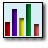

对于网站开发人员来说，浏览器信息和统计数据都是非常重要的。

菜鸟教程上的统计和趋势：
| 浏览器统计 | 最流行的浏览器是什么？ |
| 操作系统统计 | 最常见的操作系统是什么？ |
| 屏幕分辨率统计 | 最常见的屏幕分辨率和颜色深度是多少？ |
|
Internet Explorer（IE浏览器） Internet Explorer（IE浏览器）是微软公司（Microsoft）发行的一款 web 浏览器。 它发布于 1995 年，是当今最流行的浏览器之一。 |
|
Microsoft Edge 浏览器 微软新一代浏览器。 微软新的 IE 浏览器项目 Project Spartan 在 Build 2015 上正式更名为 Microsoft Edge。最新的 Edge 采用了 Chromium 内核，当然也兼容以前 IE 的功能。 |
|
Google Chrome（谷歌浏览器） Google Chrome（谷歌浏览器）是由 Google 公司开发一款开源免费的 web 浏览器。它发布于 2008 年，是当今最常用的浏览器。 |
|
Firefox（火狐浏览器） Firefox（火狐浏览器）是来自 Mozilla 的一款 web 浏览器。它发布于 2004 年，也是当今最流行的浏览器之一。 |
|
Apple Safari（苹果 Safari 浏览器） Safari 是由苹果公司开发的一款 web 浏览器，它是 Mac 系统的默认浏览器。Safari 以其时尚的设计而著称。 |
|
Opera 浏览器 Opera 是挪威人发明的一款 web 浏览器。它以下列特性而闻名于世：快速小巧、符合工业标准、适用于多种操作系统。对于一系列小型设备诸如手机和掌上电脑来说，Opera 无疑是首选的浏览器。 |
|
Mozilla 项目 Mozilla 项目是从 Netscape 的基础上发展起来的。今天，基于 Mozilla 的浏览器已经演变为互联网上最大的浏览器家族。 |
|
Netscape 浏览器 Netscape 是首个商业化的 web 浏览器。它发布于 1994 年。在 IE 的竞争下，Netscape 逐渐丧失了它的市场份额。Netscape 的官方开发结束于 2008 年 2 月。 |
浏览器的使用情况如何？
统计数据是非常重要的信息。
从下面的统计（根据菜鸟教程 CNZZ 统计），您可以看到本站用户的浏览器使用的长期趋势。
我们可以看到，Google Chrome、360安全浏览器 和 Firefox 是目前最常用的浏览器。
| 2016 | Chrome | 360 安全浏览器 | Firefox | Safari |
|---|---|---|---|---|
| 1 月 | 44.46% | 14.43% | 13.63% | 2.59% |
| 2 月 | 47.16% | 11.22% | 15.13% | 3.31% |
| 3 月 | 41.25% | 16.21% | 12.29% | 2.81% |
| 4 月 | 41.25% | 16.21% | 12.29% | 2.81% |
| 5 月 | 43.28% | 14.7% | 13.99% | 2.61% |
| 6 月 | 44.14% | 16.21% | 12.29% | 2.64% |
| 7 月 | 44.88% | 14.62% | 14.14% | 2.49% |
| 8 月 | 45.42% | 14.23% | 14.15% | 2.45% |
| 9 月 | 45.08% | 14.01% | 13.56% | 2.56% |
| 10 月 | 44.85% | 14.33% | 12.96% | 2.67% |
| 11 月 | 46.02% | 14.13% | 13.12% | 2.71% |
| 12 月 | 46.42% | 14.16% | 12.42% | 2.55% |
以上大家主要使用的浏览器，其他部分包含了 IE 浏览器，搜狗浏览器、QQ浏览器等。
作为一个一名 web 开发人员，您不能只依赖于上面的统计数据。统计数据可能会误导。
注意：菜鸟教程网站的用户群体主要是广大的 web 技术爱好者。他们一般会寻求一种更适用的替代浏览器进行安装使用。普通用户则会更倾向于直接使用系统预装的浏览器。
提示：全球平均水平可能与您的网站无关。不同的网站吸引不同的用户。一些网站吸引的是使用专业硬件的专业开发人员，而另外一些网站吸引的则是使用旧电脑的业余爱好者。
总之，我们从菜鸟教程 CNZZ 统计上收集来的统计数据。
操作系统的使用情况如何？
统计数据是非常重要的信息。
从下面的统计（根据菜鸟教程 CNZZ 上的统计），您可以看到长期以来本站用户操作系统的使用趋势。
从统计数据来看目前还是 win7 主导。
| 2016 | Win7 | Win10 | Mac OS | Win8 | Android | iOS | Windows XP | Linux |
|---|---|---|---|---|---|---|---|---|
| 1 月 | 56.41% | 15.6% | 8.02% | 8.71% | 2.1% | 1.34% | 4.34% | 1.89% |
| 2 月 | 55.16%% | 16.06% | 7.92% | 8.27% | 2.45% | 1.46% | 4.89% | 1.87% |
| 3 月 | 56.64% | 18.12% | 7.6% | 8.29% | 1.95% | 1.24% | 3.34% | 2.89% |
| 4 月 | 55.45% | 19.41% | 8.02% | 7.79% | 2.55% | 1.34% | 3.51% | 1.76% |
| 5 月 | 54.84% | 20.89% | 8.04% | 7.31% | 2.43% | 1.42% | 3.25% | 1.72% |
| 6 月 | 54.84% | 22.05% | 8.25% | 6.28% | 2.07% | 1.38% | 3.16% | 1.64% |
| 7 月 | 54.05% | 23.96% | 8.01% | 6.03% | 1.83% | 1.37% | 2.74% | 1.79% |
| 8 月 | 54.17% | 24.46% | 8.13% | 5.36% | 1.89% | 1.46% | 2.51% | 1.82% |
| 9 月 | 53.23% | 24.5% | 8.12% | 5.53% | 2.41% | 1.73% | 2.46% | 1.17% |
| 10 月 | 52% | 25.53% | 8.17% | 5.5% | 2.74% | 1.72% | 2.33% | 1.82% |
| 11 月 | 52.7% | 25.66% | 8.17% | 5.25% | 2.58% | 1.64% | 2.04% | 1.85% |
| 12 月 | 52.3% | 26.26% | 7.98% | 5.03% | 2.59% | 1.97% | 1.92% | 1.79% |
以上也列出了移动端平台系统。
作为一个一名 web 开发人员，您不能只依赖于上面的统计数据。统计数据可能会误导。
注意：菜鸟教程网站的用户群体主要是广大的 web 技术爱好者。他们一般会寻求一种更适用的替代浏览器进行安装使用。普通用户则会更倾向于直接使用系统预装的浏览器。
提示：全球平均水平可能与您的网站无关。不同的网站吸引不同的用户。一些网站吸引的是使用专业硬件的专业开发人员，而另外一些网站吸引的则是使用旧电脑的业余爱好者。
总之，我们从菜鸟教程 CNZZ 统计上收集来的统计数据。
"世界上有三种谎言：谎言、该死的谎言，以及统计数据。"
马克吐温
屏幕分辨率及颜色深度的发展趋势如何？
统计数据是非常重要的信息。
菜鸟教程网站的用户群体主要是广大的编程技术爱好者。这表明，下面的统计数据并非是 100% 针对普通互联网用户。针对普通的互联网用户统计出来的屏幕分辨率值可能会更低一些。
从下面的统计（根据菜鸟教程 CNZZ 统计），您可以看到长期以来本站用户显示器的使用趋势。
总之，我们从 菜鸟教程 CNZZ 统计的多年的统计数据，清楚地表明了长期以来屏幕分辨率及颜色深度的发展趋势。
目前，大多数用户的屏幕分辨率等于或大于 1024x768 像素：
| 日期 | 更高 | 1920x1080 | 1366x768 | 1280x1024 | 1280x800 | 1024x768 | 800x600 | 更低 |
|---|---|---|---|---|---|---|---|---|
| 2014 年 1 月 | 34% | 13% | 31% | 8% | 7% | 6% | 0.5% | 0.5% |
| 2013 年 1 月 | 36% | 11% | 25% | 10% | 8% | 9% | 0.5% | 0.5% |
| 2012 年 1 月 | 35% | 8% | 19% | 12% | 11% | 13% | 1% | 1% |
| 2011 年 1 月 | 50% | 6% | 15% | 14% | 14% | 0% | 1% | |
| 2010 年 1 月 | 39% | 2% | 18% | 17% | 20% | 1% | 3% | |
| 2009 年 1 月 | 57% | 36% | 4% | 3% | ||||
| 2008 年 1 月 | 38% | 48% | 8% | 6% | ||||
| 2007 年 1 月 | 26% | 54% | 14% | 6% | ||||
| 2006 年 1 月 | 17% | 57% | 20% | 6% | ||||
| 2005 年 1 月 | 12% | 53% | 30% | 5% | ||||
| 2004 年 1 月 | 10% | 47% | 37% | 6% | ||||
| 2003 年 1 月 | 6% | 40% | 47% | 7% | ||||
| 2002 年 1 月 | 6% | 34% | 52% | 8% | ||||
| 2001 年 1 月 | 5% | 29% | 55% | 11% | ||||
| 2000 年 1 月 | 4% | 25% | 56% | 15% |
今天，大多数计算机使用 24 位或 32 位硬件来显示 16,777,216 种不同的颜色。
较旧的计算机使用 16 位显卡，它最多能显示 65,536 种不同的颜色。
很旧的计算机使用 8 位显卡，它最多能显示 256 种不同的颜色。
| 日期 | 16,777,216 | 65,536 | 256 |
|---|---|---|---|
| 2014 年 1 月 | 98.5% | 1% | 0.5% |
| 2013 年 1 月 | 98% | 1.5% | 0.5% |
| 2012 年 1 月 | 98% | 2% | 0% |
| 2011 年 1 月 | 97% | 3% | 0% |
| 2010 年 1 月 | 97% | 3% | 0% |
| 2009 年 1 月 | 95% | 4% | 1% |
| 2008 年 1 月 | 90% | 8% | 2% |
| 2007 年 1 月 | 86% | 11% | 2% |
| 2006 年 1 月 | 81% | 16% | 3% |
| 2005 年 1 月 | 72% | 25% | 3% |
| 2004 年 1 月 | 65% | 31% | 4% |
| 2003 年 1 月 | 51% | 44% | 5% |
| 2002 年 1 月 | 43% | 50% | 7% |
| 2001 年 1 月 | 37% | 55% | 8% |
| 2000 年 1 月 | 34% | 54% | 12% |
移动设备的使用情况如何？
移动设备是一种小型计算设备。
在苹果的 iPhone 手机发布后，移动设备的使用量一直稳步增长。
今天的智能手机有大触摸屏、漂亮的用户界面，并且是高度优化的网页浏览。
从下面的统计（根据菜鸟教程 CNZZ 统计数据），您可以看到本站用户移动设备的使用趋势。
下表是 操作系统统计 中关于移动设备使用情况的细节：
| 2014 | 总计 | iOS * | Android（安卓） | 其他 |
|---|---|---|---|---|
| 5 月 | 4.16 % | 1.27 % | 2.14 % | 0.75 % |
| 4 月 | 4.03 % | 1.20 % | 2.10 % | 0.73 % |
| 3 月 | 4.00 % | 1.32 % | 2.01 % | 0.67 % |
| 2 月 | 4.00 % | 1.21 % | 2.01 % | 0.78 % |
| 1 月 | 4.00 % | 1.23 % | 1.93 % | 0.84 % |
| 2013 | 总计 | iOS * | Android（安卓） | 其他 |
| 12 月 | 3.80 % | 1.13 % | 1.76 % | 0.91 % |
| 11 月 | 3.68 % | 1.20 % | 1.67 % | 0.81 % |
| 10 月 | 3.29 % | 1.12 % | 1.44 % | 0.73 % |
| 9 月 | 3.26 % | 0.95 % | 1.55 % | 0.76 % |
| 8 月 | 3.38 % | 1.21 % | 1.43 % | 0.74 % |
| 7 月 | 3.16 % | 1.03 % | 1.37 % | 0.76 % |
| 6 月 | 3.17 % | 1.15 % | 1.32 % | 0.70 % |
| 5 月 | 2.64 % | 1.12 % | 1.04 % | 0.48 % |
| 4 月 | 2.24 % | 1.06 % | 0.97 % | 0.21 % |
| 3 月 | 2.26 % | 1.11 % | 0.96 % | 0.19 % |
| 2 月 | 2.17 % | 1.06 % | 0.91 % | 0.20 % |
| 1 月 | 2.18 % | 1.07 % | 0.90 % | 0.21 % |
| 2012 | 总计 | iOS * | Android（安卓） | 其他 |
| 12 月 | 2.19 % | 1.05 % | 0.90 % | 0.24 % |
| 11 月 | 1.97 % | 1.00 % | 0.77 % | 0.20 % |
| 10 月 | 1.84 % | 0.94 % | 0.70 % | 0.20 % |
| 9 月 | 1.78 % | 0.89 % | 0.68 % | 0.21 % |
| 8 月 | 1.79 % | 0.91 % | 0.66 % | 0.22 % |
| 7 月 | 1.71 % | 0.90 % | 0.59 % | 0.22 % |
| 6 月 | 1.63 % | 0.90 % | 0.52 % | 0.21 % |
| 5 月 | 1.57 % | 0.88 % | 0.50 % | 0.19 % |
| 4 月 | 1.47 % | 0.83 % | 0.45 % | 0.19 % |
| 3 月 | 1.40 % | 0.78 % | 0.44 % | 0.18 % |
| 2 月 | 1.27 % | 0.71 % | 0.39 % | 0.17 % |
| 1 月 | 1.25 % | 0.70 % | 0.38 % | 0.17 % |
| 2011 | 总计 | iPhone | iPad | iPod | Android（安卓） | 其他 |
|---|---|---|---|---|---|---|
| 12 月 | 1.17 % | 0.20 % | 0.39 % | 0.04 % | 0.35 % | 0.19 % |
| 11 月 | 1.02 % | 0.19 % | 0.36 % | 0.04 % | 0.30 % | 0.13 % |
| 10 月 | 0.96 % | 0.19 % | 0.33 % | 0.04 % | 0.28 % | 0.12 % |
| 9 月 | 0.89 % | 0.17 % | 0.30 % | 0.04 % | 0.25 % | 0.13 % |
| 8 月 | 0.91 % | 0.19 % | 0.30 % | 0.05 % | 0.24 % | 0.13 % |
| 7 月 | 0.95 % | 0.20 % | 0.31 % | 0.06 % | 0.24 % | 0.14 % |
| 6 月 | 0.87 % | 0.19 % | 0.30 % | 0.05 % | 0.21 % | 0.12 % |
| 5 月 | 0.80 % | 0.20 % | 0.25 % | 0.05 % | 0.19 % | 0.11 % |
| 4 月 | 0.78 % | 0.20 % | 0.25 % | 0.05 % | 0.18 % | 0.10 % |
| 3 月 | 0.70 % | 0.18 % | 0.21 % | 0.06 % | 0.16 % | 0.09 % |
| 2 月 | 0.66 % | 0.18 % | 0.19 % | 0.06 % | 0.14 % | 0.09 % |
| 1 月 | 0.65 % | 0.18 % | 0.20 % | 0.06 % | 0.13 % | 0.08 % |
* iOS 主要指的是苹果移动设备（如 iPhone、iPad 和 iPod）的操作系统。
Internet Explorer 浏览器，简称 IE 浏览器，是微软公司（Microsoft）发布的一款免费的 web 浏览器。
Internet Explorer 发布于 1995 年，在 2002 年和 2003 年达到 95% 的使用率高峰，但现已停止支持。
2015 年 3 月 17 日，微软宣布 Internet Explorer 不再是 Windows 10 的默认浏览器，并且逐步放弃这一品牌，使用 Microsoft Edge 代替。
下表是 浏览器统计信息 中关于 Internet Explorer 使用情况的细节：
| 2014 | 总计 | IE 11 | IE 10 | IE 9 | IE 8 | IE 7 | IE 6 |
|---|---|---|---|---|---|---|---|
| 5 月 | 8.9 % | 2.7 % | 1.4 % | 1.9 % | 2.1 % | 0.2 % | 0.0 % |
| 4 月 | 9.4 % | 2.7 % | 1.6 % | 2.0 % | 2.4 % | 0.3 % | 0.1 % |
| 3 月 | 9.7 % | 2.6 % | 1.6 % | 2.1 % | 2.5 % | 0.3 % | 0.1 % |
| 2 月 | 9.8 % | 2.5 % | 1.7 % | 2.1 % | 2.7 % | 0.3 % | 0.1 % |
| 1 月 | 10.2 % | 2.5 % | 1.7 % | 2.3 % | 3.1 % | 0.4 % | 0.1 % |
| 2013 | 总计 | IE 11 | IE 10 | IE 9 | IE 8 | IE 7 | IE 6 |
| 12 月 | 9.0 % | 0.8 % | 2.1 % | 2.4 % | 3.2 % | 0.4 % | 0.1 % |
| 11 月 | 10.5 % | 3.5 % | 2.5 % | 3.6 % | 0.5 % | 0.1 % | |
| 10 月 | 11.7 % | 4.0 % | 3.0 % | 4.1 % | 0.5 % | 0.1 % | |
| 9 月 | 12.1 % | 4.0 % | 2.8 % | 4.6 % | 0.6 % | 0.1 % | |
| 8 月 | 11.8 % | 3.6 % | 2.8 % | 4.7 % | 0.6 % | 0.1 % | |
| 7 月 | 11.8 % | 3.3 % | 2.8 % | 4.8 % | 0.7 % | 0.1 % | |
| 6 月 | 12.0 % | 3.1 % | 3.2 % | 4.9 % | 0.7 % | 0.1 % | |
| 5 月 | 12.6 % | 2.6 % | 3.9 % | 5.2 % | 0.8 % | 0.1 % | |
| 4 月 | 12.7 % | 2.0 % | 4.4 % | 5.3 % | 0.8 % | 0.1 % | |
| 3 月 | 12.9 % | 1.3 % | 5.2 % | 5.5 % | 0.8 % | 0.2 % | |
| 2 月 | 13.5 % | 0.9 % | 5.7 % | 5.8 % | 0.9 % | 0.2 % | |
| 1 月 | 14.3 % | 0.8 % | 5.9 % | 6.4 % | 1.0 % | 0.3 % | |
| 2012 | 总计 | IE 10 | IE 9 | IE 8 | IE 7 | IE 6 | |
| 12 月 | 14.7 % | 0.6 % | 5.9 % | 6.8 % | 1.1 % | 0.3 % | |
| 11 月 | 15.1 % | 0.4 % | 6.5 % | 6.8 % | 1.1 % | 0.3 % | |
| 10 月 | 16.1 % | 0.2 % | 6.8 % | 7.6 % | 1.2 % | 0.3 % | |
| 9 月 | 16.4 % | 0.2 % | 6.6 % | 7.9 % | 1.3 % | 0.4 % | |
| 8 月 | 16.2 % | 0.1 % | 6.1 % | 7.8 % | 1.8 % | 0.5 % | |
| 7 月 | 16.3 % | 0.1 % | 5.9 % | 7.9 % | 2.0 % | 0.6 % | |
| 6 月 | 16.7 % | 0.1 % | 6.1 % | 8.0 % | 1.9 % | 0.6 % | |
| 5 月 | 18.1 % | 0.1 % | 6.5 % | 8.8 % | 2.1 % | 0.6 % | |
| 4 月 | 18.3 % | 0.1 % | 6.4 % | 8.8 % | 2.3 % | 0.7 % | |
| 3 月 | 18.9 % | 0.0 % | 6.1 % | 9.4 % | 2.5 % | 0.9 % | |
| 2 月 | 19.5 % | 0.0 % | 5.7 % | 10.2 % | 2.6 % | 1.0 % | |
| 1 月 | 20.1 % | 0.1 % | 5.3 % | 10.5 % | 3.1 % | 1.1 % | |
| 2011 | 总计 | IE 9 | IE 8 | IE 7 | IE 6 | ||
| 12 月 | 20.2 % | 5.1 % | 10.7 % | 3.2 % | 1.2 % | ||
| 11 月 | 21.2 % | 5.1 % | 11.5 % | 3.4 % | 1.2 % | ||
| 10 月 | 21.7 % | 5.1 % | 11.8 % | 3.5 % | 1.3 % | ||
| 9 月 | 22.9 % | 4.8 % | 12.4 % | 3.9 % | 1.8 % | ||
| 8 月 | 22.5 % | 4.2 % | 11.9 % | 4.2 % | 2.0 % | ||
| 7 月 | 22.0 % | 3.9 % | 11.7 % | 4.1 % | 2.3 % | ||
| 6 月 | 23.2 % | 3.6 % | 12.9 % | 4.4 % | 2.3 % | ||
| 5 月 | 24.9 % | 3.1 % | 14.1 % | 5.3 % | 2.4 % | ||
| 4 月 | 24.3 % | 2.1 % | 14.8 % | 4.9 % | 2.5 % | ||
| 3 月 | 25.8 % | 1.1 % | 16.3 % | 5.4 % | 3.0 % | ||
| 2 月 | 26.5 % | 0.6 % | 16.7 % | 5.7 % | 3.5 % | ||
| 1 月 | 26.6 % | 0.5 % | 16.6 % | 5.7 % | 3.8 % | ||
| 2010 | 总计 | IE 9 | IE 8 | IE 7 | IE 6 | ||
| 12 月 | 27.5 % | 0.5 % | 16.5 % | 6.1 % | 4.4 % | ||
| 11 月 | 28.6 % | 0.4 % | 17.6 % | 6.5 % | 4.1 % | ||
| 10 月 | 29.7 % | 0.4 % | 17.3 % | 7.2 % | 4.8 % | ||
| 9 月 | 31.1 % | 0.2 % | 17.3 % | 8.0 % | 5.6 % | ||
| 8 月 | 30.7 % | 16.2 % | 7.8 % | 6.7 % | |||
| 7 月 | 30.4 % | 15.6 % | 7.6 % | 7.2 % | |||
| 6 月 | 31.0 % | 15.7 % | 8.1 % | 7.2 % | |||
| 5 月 | 32.2 % | 16.0 % | 9.1 % | 7.1 % | |||
| 4 月 | 33.4 % | 16.2 % | 9.3 % | 7.9 % | |||
| 3 月 | 34.9 % | 15.3 % | 10.7 % | 8.9 % | |||
| 2 月 | 35.3 % | 14.7 % | 11.0 % | 9.6 % | |||
| 1 月 | 36.2 % | 14.3 % | 11.7 % | 10.2 % | |||
| 2009 | 总计 | IE 8 | IE 7 | IE 6 | |||
| 12 月 | 37.2 % | 13.5 % | 12.8 % | 10.9 % | |||
| 11 月 | 37.7 % | 13.3 % | 13.3 % | 11.1 % | |||
| 10 月 | 37.5 % | 12.8 % | 14.1 % | 10.6 % | |||
| 9 月 | 39.6 % | 12.2 % | 15.3 % | 12.1 % | |||
| 8 月 | 39.3 % | 10.6 % | 15.1 % | 13.6 % | |||
| 7 月 | 39.4 % | 9.1 % | 15.9 % | 14.4 % | |||
| 6 月 | 40.7 % | 7.1 % | 18.7 % | 14.9 % | |||
| 5 月 | 41.0 % | 5.2 % | 21.3 % | 14.5 % | |||
| 4 月 | 42.1 % | 3.5 % | 23.2 % | 15.4 % | |||
| 3 月 | 43.3 % | 1.4 % | 24.9 % | 17.0 % | |||
| 2 月 | 43.6 % | 0.8 % | 25.4 % | 17.4 % | |||
| 1 月 | 44.8 % | 0.6 % | 25.7 % | 18.5 % | |||
| 2008 | 总计 | IE 7 | IE 6 | IE 5 | |||
| 12 月 | 46.0 % | 26.1 % | 19.6 % | 0.3 % | |||
| 11 月 | 47.0 % | 26.6 % | 20.0 % | 0.4 % | |||
| 10 月 | 47.4 % | 26.9 % | 20.2 % | 0.3 % | |||
| 9 月 | 49.0 % | 26.3 % | 22.3 % | 0.4 % | |||
| 8 月 | 51.0 % | 26.0 % | 24.5 % | 0.5 % | |||
| 7 月 | 52.4 % | 26.4 % | 25.3 % | 0.7 % | |||
| 6 月 | 54.2 % | 27.0 % | 26.5 % | 0.7 % | |||
| 5 月 | 54.4 % | 26.5 % | 27.3 % | 0.6 % | |||
| 4 月 | 54.8 % | 24.9 % | 28.9 % | 1.0 % | |||
| 3 月 | 53.9 % | 23.3 % | 29.5 % | 1.1 % | |||
| 2 月 | 54.7 % | 22.7 % | 30.7 % | 1.3 % | |||
| 1 月 | 54.7 % | 21.2 % | 32.0 % | 1.5 % | |||
| 2007 | 总计 | IE 7 | IE 6 | IE 5 | |||
| 11 月 | 56.0 % | 20.8 % | 33.6 % | 1.6 % | |||
| 9 月 | 57.2 % | 20.8 % | 34.9 % | 1.5 % | |||
| 7 月 | 58.5 % | 20.1 % | 36.9 % | 1.5 % | |||
| 5 月 | 58.9 % | 19.2 % | 38.1 % | 1.6 % | |||
| 3 月 | 58.7 % | 18.0 % | 38.7 % | 2.0 % | |||
| 1 月 | 58.6 % | 13.3 % | 42.3 % | 3.0 % | |||
| 2006 | 总计 | IE 7 | IE 6 | IE 5 | |||
| 11 月 | 60.6 % | 7.1 % | 49.9 % | 3.6 % | |||
| 9 月 | 62.1 % | 2.5 % | 55.6 % | 4.0 % | |||
| 7 月 | 62.4 % | 1.9 % | 56.3 % | 4.2 % | |||
| 5 月 | 63.0 % | 1.1 % | 57.4 % | 4.5 % | |||
| 3 月 | 64.7 % | 0.6 % | 58.8 % | 5.3 % | |||
| 1 月 | 66.0 % | 0.2 % | 60.3 % | 5.5 % | |||
| 2005 | 总计 | IE 6 | IE 5 | ||||
| 11 月 | 68.9 % | 62.7 % | 6.2 % | ||||
| 9 月 | 75.5 % | 69.8 % | 5.7 % | ||||
| 7 月 | 73.8 % | 67.9 % | 5.9 % | ||||
| 5 月 | 71.6 % | 64.8 % | 6.8 % | ||||
| 3 月 | 72.5 % | 63.6 % | 8.9 % | ||||
| 1 月 | 74.5 % | 64.8 % | 9.7 % | ||||
| 2004 | 总计 | IE 6 | IE 5 | ||||
| 11 月 | 76.2 % | 66.0 % | 10.2 % | ||||
| 9 月 | 79.0 % | 67.8 % | 11.2 % | ||||
| 7 月 | 80.4 % | 67.2 % | 13.2 % | ||||
| 5 月 | 81.9 % | 68.1 % | 13.8 % | ||||
| 3 月 | 82.8 % | 68.2 % | 14.6 % | ||||
| 1 月 | 84.7 % | 68.9 % | 15.8 % | ||||
| 2003 | 总计 | IE 6 | IE 5 | ||||
| 11 月 | 84.9 % | 71.2 % | 13.7 % | ||||
| 9 月 | 86.6 % | 69.7 % | 16.9 % | ||||
| 7 月 | 87.2 % | 66.9 % | 20.3 % | ||||
| 5 月 | 87.7 % | 65.0 % | 22.7 % | ||||
| 3 月 | 88.0 % | 63.4 % | 24.6 % | ||||
| 1 月 | 84.6 % | 55.3 % | 29.3 % | ||||
| 2002 | 总计 | IE 6 | IE 5 | IE4 | |||
| 11 月 | 83.4 % | 53.5 % | 29.9 % | ||||
| 9 月 | 83.5 % | 49.1 % | 34.4 % | ||||
| 7 月 | 85.0 % | 44.4 % | 40.1 % | 0.5% | |||
| 5 月 | 87.4 % | 40.7 % | 46.0 % | 0.7% | |||
| 3 月 | 86.8 % | 36.7 % | 49.4 % | 0.7% | |||
| 1 月 | 86.8 % | 30.1 % | 55.7 % | 1.0% |
以上统计数据是基于菜鸟教程网站的用户。
针对 Windows 8.1：Internet Explorer 11 发布于 2013 年 10 月 17 日。
针对 Windows 7：Internet Explorer 11 发布于 2013 年 11 月 7 日。
新特性：
IE 11 删除的功能：
IE 11 是快速和标准的兼容。然而，其主要缺点是，它不能运行在 Windows 7 之前的操作系统版本上，且不为该系统提供同步！
Internet Explorer 10 发布于 2012 年 9 月 4 日，是 Windows 8 中的默认浏览器。
在 2013 年 2 月，Internet Explorer 10 对所有 Windows 7 SP1 开放下载。
新特性：
IE 10 不再 支持下列：
Internet Explorer 9 发布于 2011 年 3 月。
新特性：
Internet Explorer 8 发布于 2009 年 3 月。
新特性：
IE 8 完全支持 CSS 2.1。此外，它修正了"许多跨浏览器的不一致性，比如 get/set/removeAttribute, default attributes, Attribute object 以及 <q> 标签"。
Internet Explorer 7.0 发布于 2006 年 11 月。IE7 是 Windows XP with Service Pack 2 中的标准浏览器。
Internet Explorer 7 提供改进的导航、通过工具栏进行 web 搜索、高级打印、即时搜索以及 RSS 提要。
新特性：
Internet Explorer 6.0 是 Windows XP 中的标准浏览器。发布于 2001 年 8 月。
Windows XP 基于 Windows 2000，是 Windows 98、Millennium 以及 Windows 2000 的继任者。
Internet Explorer 5 是首个支持 XML 的主流浏览器。
Version 5.5（发布于 2000 年 7 月），用于 Windows 95、98、NT 4.0 以及 Windows 2000。支持 XML/XSL、CSS、打印(打印预览)和 HTC 行为。
Version 5.01（发布于 1999 年 11 月），主要是修正了 5.0 的一个 bug。
Version 5.0（发布于 1999 年 3 月），是首个支持 XML 的主流浏览器。
大多数用户都不在使用更老的 Internet Explorer 版本。Web 开发者会忽略它们。而它们的功能也过时了。
IE 4.0（发布于 1997 年）。这个版本对 CSS 和 DOM 的支持非常好，但不支持 XML。
IE 3.0（发布于 1996 年）的使用率不到 0.1%。
IE 2.0（发布于 1995 年）。这个版本太老了，已经没有人使用它了。
IE 1.0（发布于 1995 年）。还有人记得它吗？
Version 5.1.7 是最后一个用于 Mac OS 8 和 9 的 Internet Explorer，发布于 2003 年 7 月。
Version 5.2.3 是最后一个用于 Mac OS X 的 Internet Explorer，发布于 2003 年 6 月。
注释：version 5.2.3 需要 Mac OS X 中的特殊特性。Mac OS 8 和 9 的用户必须下载 version 5.1.7。
微软已在 2005 年 12 月 31 日停止对用于 Mac 的 Internet Explorer 的技术支持。
Mac 用户推荐使用其他浏览器，比如 苹果的 Safari 浏览器。
微软的 Internet Explorer 站点
微软的 Internet Explorer 支持站点
微软的支持站点包括了可搜索知识库、下载中心、产品 FAQ 以及辅助支持目录。
Firefox 浏览器，中文名"火狐浏览器"，是来自 Mozilla 的一款免费的开源 web 浏览器。
Firefox 发布于 2004 年，也是当今最流行的浏览器之一。
Firefox 可以在 Windows、Mac OS X、Linux 和 Android 上运行。
下表是 浏览器统计信息 中关于 Firefox 使用情况的细节：
| 2014 | 总计 | FF 30 | FF 29 | FF 28 | FF 27 | FF 26 | FF 25 | 更旧 | ||||
|---|---|---|---|---|---|---|---|---|---|---|---|---|
| 5 月 | 24.9% | 0.1% | 14.2% | 5.2% | 0.5% | 0.5% | 0.2% | 4.2% | ||||
| 4 月 | 25.0% | 1.1% | 18.1% | 1.2% | 0.7% | 0.3% | 3.6% | |||||
| 3 月 | 25.6% | 0.3% | 3.4% | 16.3% | 1.0% | 0.4% | 4.2% | |||||
| 2 月 | 26.4% | 0.6% | 11.7% | 8.7% | 0.6% | 4.8% | ||||||
| 1 月 | 26.9% | 1.2% | 18.9% | 1.0% | 5.8% | |||||||
| 2013 | 总计 | FF 26 | FF 25 | FF 24 | FF 23 | FF 22 | FF 21 | FF 20 | FF 19 | FF 18 | FF 17 | 更旧 |
| 12 月 | 26.8% | 6.9% | 13.3% | 1.1% | 0.5% | 0.4% | 0.3% | 0.4% | 0.2% | 0.2% | 0.5% | 3.0% |
| 11 月 | 26.8% | 1.0% | 16.2% | 3.5% | 0.7% | 0.5% | 0.4% | 0.4% | 0.3% | 0.2% | 0.7% | 2.9% |
| 10 月 | 27.2% | 0.1% | 1.3% | 18.4% | 2.0% | 0.7% | 0.4% | 0.5% | 0.3% | 0.4% | 0.7% | 2.5% |
| 9 月 | 27.8% | 0.1% | 0.3% | 3.1% | 17.5% | 1.0% | 0.6% | 0.5% | 0.3% | 0.4% | 0.9% | 3.2% |
| 8 月 | 28.2% | 0.7% | 10.8% | 9.9% | 1.0% | 0.7% | 0.4% | 0.4% | 0.8% | 3.5% | ||
| 7 月 | 28.9% | 0.1% | 1.2% | 18.0% | 3.1% | 1.0% | 0.5% | 0.5% | 0.8% | 3.7% | ||
| 6 月 | 28.9% | 0.1% | 1.7% | 19.8% | 1.3% | 0.7% | 0.5% | 0.8% | 4.0% | |||
| 5 月 | 27.7% | 0.1% | 0.5% | 6.5% | 14.0% | 0.9% | 0.6% | 0.8% | 4.3% | |||
| 4 月 | 27.9% | 0.1% | 0.7% | 12.9% | 7.3% | 0.8% | 0.8% | 5.9% | ||||
| 3 月 | 28.5% | 0.1% | 0.9% | 19.0% | 1.4% | 0.9% | 6.2% | |||||
| 2 月 | 29.6% | 0.1% | 0.2% | 4.6% | 16.0% | 1.2% | 7.5% | |||||
| 1 月 | 30.2% | 0.1% | 0.6% | 12.4% | 8.3% | 8.8% | ||||||
| 2012 | 总计 | FF 17 | FF 16 | FF 15 | FF 14 | FF 13 | FF 12 | FF 11 | FF 9-10 | FF 4-8 | FF 3.6 | 更旧 |
| 12 月 | 31.1% | 16.3% | 5.6% | 1.3% | 1.0% | 0.7% | 1.1% | 0.6% | 1.2% | 1.2% | 0.8% | 1.3% |
| 11 月 | 31.2% | 2.5% | 19.4% | 1.8% | 1.2% | 0.8% | 1.2% | 0.6% | 1.3% | 1.3% | 0.8% | 0.3% |
| 10 月 | 31.8% | 0.4% | 9.5% | 12.4% | 1.8% | 1.0% | 1.4% | 0.8% | 1.4% | 1.6% | 1.0% | 0.5% |
| 9 月 | 32.2% | 0.8% | 17.7% | 4.8% | 1.3% | 1.6% | 1.0% | 1.6% | 1.9% | 1.2% | 0.3% | |
| 8 月 | 32.8% | 1.9% | 20.3% | 2.1% | 1.8% | 1.1% | 1.7% | 2.1% | 1.2% | 0.7% | ||
| 7 月 | 33.7% | 0.3% | 7.4% | 15.2% | 3.0% | 1.3% | 2.1% | 2.4% | 1.5% | 0.5% | ||
| 6 月 | 34.4% | 0.6% | 12.1% | 12.5% | 1.6% | 2.3% | 2.7% | 1.8% | 0.8% | |||
| 5 月 | 35.2% | 0.1% | 0.8% | 21.4% | 3.8% | 2.7% | 3.4% | 2.3% | 0.7% | |||
| 4 月 | 35.8% | 0.1% | 2.6% | 21.6% | 3.8% | 3.8% | 3.1% | 0.8% | ||||
| 3 月 | 36.3% | 0.3% | 9.1% | 17.3% | 5.0% | 3.7% | 0.9% | |||||
| 2 月 | 37.1% | 0.1% | 0.6% | 24.2% | 6.5% | 4.3% | 1.4% | |||||
| 1 月 | 37.2% | 0.1% | 18.6% | 12.4% | 5.0% | 1.1% | ||||||
| 2011 | 总计 | FF 9 | FF 8 | FF 7 | FF 6 | FF 5 | FF 4 | FF 3.6 | FF 3.5 | FF 3.0 | 更旧 | |
| 12 月 | 37.7% | 1.8% | 22.8% | 2.1% | 1.5% | 1.2% | 1.3% | 5.6% | 0.6% | 0.5% | 0.3% | |
| 11 月 | 38.1% | 0.4% | 12.7% | 11.5% | 2.2% | 1.5% | 1.5% | 6.9% | 0.6% | 0.5% | 0.3% | |
| 10 月 | 38.7% | 0.6% | 19.8% | 5.1% | 2.0% | 1.8% | 7.9% | 0.7% | 0.5% | 0.3% | ||
| 9 月 | 39.7% | 1.5% | 22.2% | 3.1% | 2.2% | 9.0% | 0.7% | 0.7% | 0.3% | |||
| 8 月 | 40.6% | 9.5% | 15.9% | 2.9% | 10.3% | 0.8% | 0.8% | 0.4% | ||||
| 7 月 | 42.0% | 0.6% | 23.2% | 4.6% | 11.5% | 0.9% | 0.9% | 0.3% | ||||
| 6 月 | 42.2% | 5.6% | 21.5% | 12.3% | 1.5% | 0.9% | 0.4% | |||||
| 5 月 | 42.4% | 0.3% | 23.4% | 15.6% | 1.8% | 1.0% | 0.3% | |||||
| 4 月 | 42.9% | 15.7% | 23.8% | 2.1% | 1.1% | 0.2% | ||||||
| 3 月 | 42.2% | 5.2% | 32.9% | 2.5% | 1.3% | 0.3% | ||||||
| 2 月 | 42.4% | 1.9% | 35.8% | 2.9% | 1.5% | 0.3% | ||||||
| 1 月 | 42.8% | 1.5% | 36.1% | 3.1% | 1.7% | 0.4% | ||||||
| 2010 | 总计 | FF 4 | FF 3.6 | FF 3.5 | FF 3.0 | 更旧 | ||||||
| 12 月 | 43.5% | 1.1% | 36.5% | 3.5% | 2.0% | 0.4% | ||||||
| 11 月 | 44.0% | 0.8% | 36.9% | 3.8% | 2.0% | 0.5% | ||||||
| 10 月 | 44.4% | 0.7% | 36.2% | 4.5% | 2.4% | 0.6% | ||||||
| 9 月 | 45.1% | 0.8% | 35.3% | 5.6% | 2.9% | 0.5% | ||||||
| 8 月 | 45.8% | 0.6% | 35.2% | 6.1% | 3.1% | 0.6% | ||||||
| 7 月 | 46.4% | 0.4% | 34.5% | 7.3% | 3.6% | 0.6% | ||||||
| 6 月 | 46.6% | 32.7% | 9.1% | 4.0% | 0.8% | |||||||
| 5 月 | 46.9% | 31.7% | 10.0% | 4.4% | 0.8% | |||||||
| 4 月 | 46.4% | 29.4% | 11.5% | 4.6% | 0.9% | |||||||
| 3 月 | 46.2% | 22.1% | 17.6% | 5.6% | 0.9% | |||||||
| 2 月 | 46.5% | 10.5% | 28.5% | 6.5% | 1.0% | |||||||
| 1 月 | 46.3% | 2.2% | 34.2% | 8.6% | 1.3% | |||||||
| 2009 | 总计 | FF 3.5 | FF 3.0 | FF 2.0 | 更旧 | |||||||
| 12 月 | 46.4% | 33.3% | 11.2% | 1.2% | 0.7% | |||||||
| 11 月 | 47.0% | 31.4% | 13.6% | 1.5% | 0.5% | |||||||
| 10 月 | 47.5% | 29.8% | 15.7% | 1.6% | 0.4% | |||||||
| 9 月 | 46.6% | 27.3% | 17.2% | 1.8% | 0.3% | |||||||
| 8 月 | 47.4% | 21.0% | 24.0% | 1.9% | 0.5% | |||||||
| 7 月 | 47.9% | 12.1% | 33.3% | 1.9% | 0.6% | |||||||
| 6 月 | 47.3% | 1.2% | 43.4% | 2.3% | 0.4% | |||||||
| 5 月 | 47.7% | 44.3% | 2.9% | 0.5% | ||||||||
| 4 月 | 47.1% | 43.4% | 2.8% | 0.9% | ||||||||
| 3 月 | 46.5% | 42.2% | 3.0% | 1.3% | ||||||||
| 2 月 | 46.4% | 41.5% | 3.8% | 1.1% | ||||||||
| 1 月 | 45.5% | 39.5% | 4.6% | 1.4% | ||||||||
| 2008 | 总计 | FF 3.0 | FF 2.0 | FF 1.5 | Moz | |||||||
| 12 月 | 44.7% | 38.1% | 6.2% | 0.1% | 0.3% | |||||||
| 11 月 | 44.6% | 35.9% | 8.0% | 0.3% | 0.4% | |||||||
| 10 月 | 44.5% | 34.9% | 8.7% | 0.4% | 0.5% | |||||||
| 9 月 | 43.1% | 31.9% | 10.1% | 0.6% | 0.5% | |||||||
| 8 月 | 44.2% | 25.5% | 17.5% | 0.7% | 0.5% | |||||||
| 7 月 | 43.1% | 20.7% | 21.1% | 0.8% | 0.5% | |||||||
| 6 月 | 41.5% | 8.9% | 31.2% | 0.9% | 0.5% | |||||||
| 5 月 | 40.5% | 2.9% | 35.9% | 1.0% | 0.7% |
以上统计数据是基于菜鸟教程网站的用户。
Firefox 29 发布于 2014 年 4 月 29 日。
Firefox 29 可以在 Windows、Mac、Linux 和 Android 上运行。
新特性：
Firefox 28 发布于 2014 年 3 月 18 日。
Firefox 28 可以在 Windows、Mac、Linux 和 Android 上运行。
新特性：
Firefox 27 发布于 2014 年 2 月 4 日。
Firefox 27 可以在 Windows、Mac、Linux 和 Android 上运行。
新特性：
Firefox 26 发布于 2013 年 12 月 10 日。
Firefox 26 可以在 Windows、Mac、Linux 和 Android 上运行。
新特性：
Firefox 25 发布于 2013 年 10 月 29 日。
Firefox 25 可以在 Windows、Mac、Linux 和 Android 上运行。
新特性：
Firefox 24 发布于 2013 年 9 月 17 日。
Firefox 24 可以在 Windows、Mac、Linux 和 Android 上运行。
新特性：
Firefox 23 发布于 2013 年 8 月 7 日。
Firefox 23 可以在 Windows、Mac、Linux 和 Android 手机版上运行。
新特性：
Firefox 22 发布于 2013 年 6 月 25 日。
Firefox 22 可以在 Windows、Mac、Linux 和 Android 手机版上运行。
新特性：
Firefox 21 发布于 2013 年 5 月 14 日。
Firefox 21 可以在 Windows、Mac、Linux 和 Android 手机版上运行。
新特性：
Firefox 20 发布于 2013 年 4 月 2 日。
Firefox 20 可以在 Windows、Mac、Linux 和 Android 手机版上运行。
新特性：
Firefox 19 发布于 2013 年 2 月 20 日。
Firefox 19 可以在 Windows、Mac 和 Linux 上运行。
新特性：
Firefox 18 发布于 2013 年 1 月 8 日。
Firefox 18 可以在 Windows、Mac OS X（Snow Leopard、Lion 和 Mountain Lion）、Linux 和 Android 上运行。
新特性：
Firefox 17 发布于 2012 年 11 月 20 日。
Firefox 17 可以在 Windows、Mac OS X、Linux 和 Android 上运行。
新特性：
Firefox 16 发布于 2012 年 10 月 9 日。
Firefox 16 可以在 Windows、Mac OS X、Linux 和 Android 上运行。
新特性：
Firefox 15 发布于 2012 年 8 月 28 日。
Firefox 15 可以在 Windows、Mac OS X、Linux 和 Android 上运行。
新特性：
Firefox 14 发布于 2012 年 7 月 17 日。
Firefox 14 可以在 Windows、Mac OS X、Linux 和 Android 上运行。
新特性：
Firefox 13 发布于 2012 年 6 月 5 日。
Firefox 13 可以在 Windows、Mac OS X、Linux 和 Android 上运行。
新特性：
Firefox 12 发布于 2012 年 4 月 24 日。
Firefox 12 可以在 Windows、Mac OS X、Linux 和 Android 上运行。
新特性：
Firefox 11 发布于 2012 年 3 月 13 日。
Firefox 11 可以在 Windows、Mac OS X、Linux 和 Android 上运行。
新特性：
Firefox 10 发布于 2012 年 1 月 31 日。
Firefox 10 可以在 Windows、Mac OS X、Linux 和 Android 上运行。
新特性：
Firefox 9 发布于 2011 年 12 月 20 日。
Firefox 9 可以在 Windows、Mac OS X 和 Linux 上运行。
新特性：
Firefox 8 发布于 2011 年 11 月 8 日。
Firefox 8 可以在 Windows、Mac OS X 和 Linux 上运行。
新特性：
Firefox 7 发布于 2011 年 9 月 27 日。
Firefox 7 可以在 Windows、Mac OS X 和 Linux 上运行。
新特性：
Firefox 6 发布于 2011 年 8 月 16 日。
Firefox 6 可以在 Windows、Mac OS X 和 Linux 上运行。
新特性：
Firefox 5 发布于 2011 年 6 月。
Firefox 5 可以在 Windows、Mac OS X 和 Linux 上运行。
新特性：
Firefox 4 发布于 2011 年 3 月。
Firefox 4 可以在 Windows、Mac OS X 和 Linux 上运行。
新特性：
Firefox 3.6 发布于 2011 年 1 月。
Firefox 3.6 是建立在 Mozilla 的 Gecko 1.9.2 网页渲染平台上，该平台自 2009 年初开始开发，为 Web 开发人员、插件开发者及用户包含了许多改进功能，这个版本也比以前的版本更快，更具响应性，且已经进行优化，可运行在小型设备操作系统上，比如 Maemo。
新特性：
Firefox 3.5 - 发布于 2009 年 6 月。
Firefox 3.0 - 发布于 2008 年 6 月。
Firefox 2.0 - 发布于 2006 年 12 月。
Firefox 1.5 - 发布于 2005 年 11 月。
Firefox 1.0 - 发布于 2004 年 11 月。
Firefox 的支持站点
Firefox 的支持站点包括了可搜索知识库、下载中心、产品 FAQ 以及辅助支持目录。
Google Chrome 浏览器，中文名"谷歌浏览器"，是一款免费的开源 web 浏览器，它由 Google 开发，发布于 2008 年。
当 Google 决定开发一款浏览器时，他们需要彻底地重新谋划这款浏览器，这是因为如今的浏览器与仅需要浏览简单的文本页面时有很大的不同，现在，我们在浏览器上发邮件、购物、付账单，以及运行其他的大型应用程序。
Google Chrome 是当今最常用的浏览器：下载 Chrome。
下表是 浏览器统计信息 中关于 Google Chrome 使用情况的细节：
| 2014 | 总计 | C 35 | C 34 | C 33 | C 32 | C 31 | C 30 | 更旧 | ||||
|---|---|---|---|---|---|---|---|---|---|---|---|---|
| 5 月 | 59.2% | 12.8% | 40.5% | 1.8% | 0.8% | 0.8% | 0.3% | 2.2% | ||||
| 4 月 | 58.4% | 31.7% | 21.4% | 1.0% | 0.9% | 0.3% | 3.1% | |||||
| 3 月 | 57.5% | 0.8% | 49.8% | 2.2% | 1.3% | 0.4% | 3.0% | |||||
| 2 月 | 56.4% | 0.4% | 12.2% | 33.3% | 2.0% | 0.5% | 8.0% | |||||
| 1 月 | 55.7% | 26.4% | 24.5% | 0.8% | 4.0% | |||||||
| 2013 | 总计 | C 32 | C 31 | C 30 | C 29 | C 28 | C 27 | C 26 | C 25 | C 24 | C 23 | 更旧 |
| 12 月 | 55.8% | 1.0% | 49.0% | 1.6% | 0.8% | 0.8% | 0.6% | 0.3% | 0.2% | 0.1% | 0.2% | 1.2% |
| 11 月 | 54.8% | 0.5% | 26.3% | 23.7% | 1.1% | 1.0% | 0.6% | 0.4% | 0.3% | 0.2% | 0.2% | 0.5% |
| 10 月 | 54.1% | 0.2% | 0.5% | 39.8% | 8.3% | 1.9% | 0.7% | 0.4% | 0.4% | 0.2% | 0.2% | 1.5% |
| 9 月 | 53.2% | 0.6% | 46.0% | 3.2% | 1.0% | 0.5% | 0.4% | 0.2% | 0.2% | 1.1% | ||
| 8 月 | 52.9% | 0.5% | 11.1% | 36.5% | 1.9% | 0.5% | 0.5% | 0.3% | 0.2% | 1.1% | ||
| 7 月 | 52.8% | 0.2% | 0.5% | 30.3% | 18.3% | 0.8% | 0.6% | 0.3% | 0.3% | 1.5% | ||
| 6 月 | 52.1% | 0.4% | 1.5% | 45.3% | 1.7% | 1.1% | 0.4% | 0.3% | 1.4% | |||
| 5 月 | 52.9% | 0.5% | 10.0% | 38.4% | 1.4% | 0.5% | 0.4% | 1.7% | ||||
| 4 月 | 52.7% | 0.3% | 0.7% | 45.8% | 2.9% | 0.7% | 0.6% | 1.7% | ||||
| 3 月 | 51.7% | 0.4% | 2.1% | 44.2% | 2.1% | 0.8% | 2.1% | |||||
| 2 月 | 50.0% | 7.7% | 37.8% | 1.4% | 3.1% | |||||||
| 1 月 | 48.4% | 0.7% | 26.5% | 17.7% | 3.5% | |||||||
| 2012 | 总计 | C 25 | C 24 | C 23 | C 22 | C 21 | C 20 | C 19 | C 18 | C 17 | C 16 | 更旧 |
| 12 月 | 46.9% | 0.4% | 0.7% | 41.7% | 1.1% | 0.5% | 0.5% | 0.2% | 0.5% | 0.2% | 0.1% | 1.0% |
| 11 月 | 46.3% | 0.3% | 0.6% | 30.3% | 10.7% | 1.1% | 0.7% | 0.4% | 0.7% | 0.3% | 0.2% | 1.0% |
| 10 月 | 44.9% | 0.3% | 0.7% | 38.2% | 1.8% | 0.9% | 0.5% | 0.8% | 0.4% | 0.3% | 1.0% | |
| 9 月 | 44.1% | 0.4% | 4.1% | 35.2% | 0.9% | 0.6% | 1.0% | 0.4% | 0.3% | 1.2% | ||
| 8 月 | 43.7% | 0.1% | 0.5% | 34.7% | 4.2% | 0.9% | 1.2% | 0.5% | 0.3% | 1.3% | ||
| 7 月 | 42.9% | 0.3% | 0.7% | 35.4% | 2.7% | 1.3% | 0.6% | 0.4% | 1.5% | |||
| 6 月 | 41.7% | 0.4% | 1.6% | 35.4% | 1.5% | 0.7% | 0.4% | 1.7% | ||||
| 5 月 | 39.3% | 0.1% | 0.5% | 15.8% | 19.8% | 0.9% | 0.5% | 1.7% | ||||
| 4 月 | 38.3% | 0.3% | 0.9% | 31.3% | 3.4% | 0.6% | 1.8% | |||||
| 3 月 | 37.3% | 0.6% | 1.5% | 31.9% | 1.0% | 2.3% | ||||||
| 2 月 | 36.3% | 0.3% | 0.9% | 17.1% | 15.3% | 2.7% | ||||||
| 1 月 | 35.3% | 0.3% | 1.1% | 30.5% | 3.4% | |||||||
| 2011 | 总计 | C 17 | C 16 | C 15 | C 14 | C 13 | C 12 | C 11 | C 10 | C 9 | C 8 | 更旧 |
| 12 月 | 34.6% | 0.7% | 13.4% | 17.8% | 0.9% | 0.4% | 0.4% | 0.2% | 0.2% | 0.1% | 0.1% | 0.4% |
| 11 月 | 33.4% | 0.4% | 1.0% | 28.1% | 1.6% | 0.5% | 0.5% | 0.2% | 0.2% | 0.1% | 0.1% | 0.7% |
| 10 月 | 32.3% | 0.5% | 3.3% | 25.5% | 0.9% | 0.8% | 0.3% | 0.3% | 0.1% | 0.1% | 0.5% | |
| 9 月 | 30.5% | 0.7% | 11.2% | 16.0% | 1.1% | 0.3% | 0.3% | 0.1% | 0.1% | 0.7% | ||
| 8 月 | 30.3% | 0.3% | 1.0% | 21.2% | 6.0% | 0.5% | 0.3% | 0.1% | 0.2% | 0.7% | ||
| 7 月 | 29.4% | 0.7% | 1.2% | 25.3% | 0.7% | 0.4% | 0.2% | 0.2% | 0.7% | |||
| 6 月 | 27.9% | 0.2% | 0.8% | 17.3% | 7.6% | 0.8% | 0.2% | 0.2% | 0.8% | |||
| 5 月 | 25.9% | 0.3% | 1.1% | 21.0% | 2.2% | 0.3% | 0.3% | 0.7% | ||||
| 4 月 | 25.6% | 0.6% | 1.9% | 21.3% | 0.6% | 0.4% | 0.8% | |||||
| 3 月 | 25.0% | 0.1% | 0.8% | 14.8% | 7.7% | 0.6% | 1.0% | |||||
| 2 月 | 24.1% | 0.2% | 0.9% | 17.0% | 4.8% | 1.2% | ||||||
| 1 月 | 23.8% | 0.7% | 1.3% | 20.4% | 1.4% | |||||||
| 2010 | 总计 | C 9 | C 8 | C 7 | C 6 | C 5 | C 4 | 更旧 | ||||
| 12 月 | 22.4% | 1.2% | 16.6% | 3.5% | 0.4% | 0.4% | 0.2% | 0.1% | ||||
| 11 月 | 20.5% | 0.6% | 0.9% | 17.7% | 0.7% | 0.4% | 0.2% | 0.0% | ||||
| 10 月 | 19.2% | 0.3% | 5.6% | 12.3% | 0.6% | 0.2% | 0.2% | |||||
| 9 月 | 17.3% | 0.6% | 11.4% | 4.9% | 0.3% | 0.1% | ||||||
| 8 月 | 17.0% | 0.1% | 1.3% | 15.1% | 0.3% | 0.2% | ||||||
| 7 月 | 16.7% | 0.8% | 15.3% | 0.4% | 0.2% | |||||||
| 6 月 | 15.9% | 0.7% | 13.9% | 1.1% | 0.2% | |||||||
| 5 月 | 14.5% | 0.3% | 3.4% | 10.6% | 0.2% | |||||||
| 4 月 | 13.6% | 2.5% | 10.8% | 0.3% | ||||||||
| 3 月 | 12.3% | 1.7% | 10.4% | 0.2% | ||||||||
| 2 月 | 11.6% | 1.0% | 10.0% | 0.6% | ||||||||
| 1 月 | 10.8% | 2.8% | 8.0% | |||||||||
| 2009 | 总计 | C 4 | C 3 | C 2 | C 1 | |||||||
| 12 月 | 9.8% | 1.9% | 7.7% | 0.1% | 0.1% | |||||||
| 11 月 | 8.5% | 1.1% | 7.1% | 0.2% | 0.1% | |||||||
| 10 月 | 8.0% | 0.5% | 7.0% | 0.4% | 0.1% | |||||||
| 9 月 | 7.1% | 0.4% | 2.7% | 3.9% | 0.1% | |||||||
| 8 月 | 7.0% | 0.8% | 6.1% | 0.1% | ||||||||
| 7 月 | 6.5% | 0.3% | 6.0% | 0.2% | ||||||||
| 6 月 | 6.0% | 0.2% | 4.6% | 1.2% | ||||||||
| 5 月 | 5.5% | 0.8% | 4.6% | |||||||||
| 4 月 | 4.9% | 0.4% | 4.4% | |||||||||
| 3 月 | 4.2% | 0.2% | 3.9% | |||||||||
| 2 月 | 4.0% | 0.1% | 3.8% | |||||||||
| 1 月 | 3.9% | 0.1% | 3.7% | |||||||||
| 2008 | 总计 | C 1 | Beta | |||||||||
| 12 月 | 3.6% | 1.6% | 2.0% | |||||||||
| 11 月 | 3.1% | 3.1% | ||||||||||
| 10 月 | 3.0% | 3.0% | ||||||||||
| 9 月 | 3.1% | 3.1% |
以上统计数据是基于菜鸟教程网站的用户。
Google 制作了一个关于他们如何开发 Google Chrome 浏览器的漫画：
http://www.google.com/googlebooks/chrome/
Chrome 34 发布于 2014 年 4 月 8 日。
Chrome 34 可以在 Windows、Mac、Linux 和 Android 上运行（4 月 2 日）。
新特性：
Chrome 33 发布于 2014 年 2 月 20 日。
Chrome 33 可以在 Windows、Mac、Linux 和 Android 上运行（2 月 26 日）。
Chrome Frame（针对 Internet Explorer 的 Chrome 窗口插件）已正式退休。
新特性：
Chrome 32 发布于 2014 年 1 月 14 日。
Chrome 32 可以在 Windows、Mac、Linux、Chrome Frame 和 Android 上运行（1 月 15 日）。
新特性：
Chrome 31 发布于 2013 年 11 月 12 日。
Chrome 31 可以在 Windows、Mac、Linux、Chrome Frame 和 Android 上运行（11 月 15 日）。
新特性：
Chrome 30 发布于 2013 年 10 月 1 日。
Chrome 30 可以在 Windows、Mac、Linux 和 Android 上运行。
新特性：
Chrome 29 发布于 2013 年 8 月 20 日。
Chrome 29 可以在 Windows、Mac、Linux 和 Android 上运行。
新特性：
Chrome 28 发布于 2013 年 7 月 30 日。
Chrome 28 可以在 Windows、Mac、Linux 和 Android 上运行。
新特性：
Chrome 27 发布于 2013 年 5 月 22 日。
Chrome 27 可以在 Windows、Mac 和 Linux 上运行。
新特性：
Chrome 26 发布于 2013 年 3 月 26 日。
Chrome 26 可以在 Windows、Mac 和 Linux 上运行。
新特性：
Chrome 25 发布于 2013 年 2 月 21 日。
Chrome 25 可以在 Windows、Mac 和 Linux 上运行。
新特性：
Chrome 24 发布于 2013 年 1 月 10 日。
Chrome 24 可以在 Windows、Mac 和 Linux 上运行。
新特性：
Chrome 23 发布于 2012 年 11 月 6 日。
Chrome 23 可以在 Windows、Mac 和 Linux 上运行。
新特性：
Chrome 22 发布于 2012 年 9 月 25 日。
Chrome 22 可以在 Windows、Mac 和 Linux 上运行。
新特性：
Chrome 21 发布于 2012 年 8 月 1 日。
Chrome 21 可以在 Windows、Mac 和 Linux 上运行。
新特性：
Chrome 20 发布于 2012 年 7 月 11 日。
Chrome 20 可以在 Windows、Mac 和 Linux 上运行。
新特性：
Chrome 19 发布于 2012 年 5 月 16 日。
Chrome 19 可以在 Windows、Mac 和 Linux 上运行。
新特性：
Chrome 18 发布于 2012 年 4 月 19 日。
Chrome 18 可以在 Windows、Mac 和 Linux 上运行。
新特性：
Chrome 17 发布于 2012 年 2 月 8 日。
Chrome 17 可以在 Windows、Mac 和 Linux 上运行。
新特性：
注意：2012 年 2 月 6 日 - Google 为 Android 4.0 平板电脑和手机发布了第一个 Chrome 测试版本！
Chrome 16 发布于 2011 年 12 月 14 日。
新特性：
Chrome 15 发布于 2011 年 10 月 25 日。
新特性：
Chrome 14 发布于 2011 年 9 月 16 日。
新特性：
Chrome 13 发布于 2011 年 8 月 2 日。
新特性：
Chrome 12 发布于 2011 年 6 月 7 日。
新特性：
Chrome 11 发布于 2011 年 4 月 27 日。
新特性：
Chrome 10 发布于 2011 年 3 月 8 日。
新特性：
Chrome 9 发布于 2011 年 2 月 3 日。
新特性：
Chrome 8 发布于 2010 年 12 月 2 日。
新特性：
Chrome 7 发布于 2010 年 10 月 21 日。
新特性：
Chrome 6 发布于 2010 年 9 月 2 日。
新特性：
Chrome 5 发布于 2010 年 5 月 21 日。
新特性：
Chrome 4 发布于 2010 年 1 月 25 日。
新特性：
Chrome 3 发布于 2009 年 10 月 12 日。
新特性：
Chrome 2 发布于 2009 年 5 月 24 日。
新特性：
Chrome 1 发布于 2008 年 12 月 11 日。
第一个稳定版本！
Google 花费了 100 天的时间将 Beta 版本提升至正式版。在这 100 天中，Google 完善了该浏览器，并搜集了来自用户的需求。
Chrome 的第一个 Beta 1 版本发布于 2008 年 9 月 2 日。
在 2003 年 1 月，史蒂夫乔布斯（Steve Jobs）宣布苹果正在开发自己的浏览器：Safari。
在此之前，Mac 系统使用 Netscape Navigator 或 Internet Explorer 作为其默认浏览器。
第一个正式的 ("out-of-beta") Safari 版本于 2003 年 6 月发布。在 2005 年 4 月，Safari 成为 Mac 系统的默认浏览器。
如同苹果的许多产品，Safari 以易用和清爽的设计闻名。Safari 支持 Mac 和 Windows 系统。
下表是 浏览器统计信息 中关于 Safari 使用情况的细节：
| 2014 | 总计 | S 7 | S 6 | S 5 | |
|---|---|---|---|---|---|
| 5 月 | 3.8 % | 3.0 % | 0.7 % | 0.3 % | |
| 4 月 | 4.0 % | 2.8 % | 0.8 % | 0.4 % | |
| 3 月 | 3.9 % | 2.5 % | 0.9 % | 0.5 % | |
| 2 月 | 4.0 % | 2.5 % | 1.0 % | 0.5 % | |
| 1 月 | 3.9 % | 2.3 % | 1.1 % | 0.5 % | |
| 2013 | 总计 | S 7 | S 6 | S 5 | S 4 |
| 12 月 | 3.8 % | 2.2 % | 1.1 % | 0.5 % | 0.0 % |
| 11 月 | 4.0 % | 2.0 % | 1.4 % | 0.6 % | 0.0 % |
| 10 月 | 3.8 % | 1.0 % | 2.1 % | 0.7 % | 0.0 % |
| 9 月 | 3.9 % | 3.1 % | 0.8 % | 0.0 % | |
| 8 月 | 3.9 % | 3.0 % | 0.9 % | 0.0 % | |
| 7 月 | 3.6 % | 2.8 % | 0.8 % | 0.0 % | |
| 6 月 | 3.9 % | 3.0 % | 0.9 % | 0.0 % | |
| 5 月 | 4.0 % | 2.9 % | 1.0 % | 0.0 % | |
| 4 月 | 4.0 % | 2.8 % | 1.1 % | 0.0 % | |
| 3 月 | 4.1 % | 2.8 % | 1.2 % | 0.1 % | |
| 2 月 | 4.1 % | 2.7 % | 1.3 % | 0.1 % | |
| 1 月 | 4.2 % | 2.7 % | 1.4 % | 0.1 % | |
| 2012 | 总计 | S 6 | S 5 | S 4 | |
| 12 月 | 4.2 % | 2.6 % | 1.5 % | 0.1 % | |
| 11 月 | 4.4 % | 2.6 % | 1.7 % | 0.1 % | |
| 10 月 | 4.3 % | 2.3 % | 1.9 % | 0.1 % | |
| 9 月 | 4.2 % | 1.9 % | 2.2 % | 0.1 % | |
| 8 月 | 4.0 % | 1.4 % | 2.5 % | 0.1 % | |
| 7 月 | 3.9 % | 0.2 % | 3.6 % | 0.1 % | |
| 6 月 | 4.1 % | 4.0 % | 0.1 % | ||
| 5 月 | 4.3 % | 4.2 % | 0.1 % | ||
| 4 月 | 4.5 % | 4.4 % | 0.1 % | ||
| 3 月 | 4.4 % | 4.3 % | 0.1 % | ||
| 2 月 | 4.5 % | 4.4 % | 0.1 % | ||
| 1 月 | 4.3 % | 4.2 % | 0.1 % | ||
| 2011 | 总计 | S 5 | S 4 | S 3 | |
| 12 月 | 4.2 % | 4.1 % | 0.1 % | 0.0 % | |
| 11 月 | 4.2 % | 4.1 % | 0.1 % | 0.0 % | |
| 10 月 | 4.2 % | 4.0 % | 0.2 % | 0.0 % | |
| 9 月 | 4.0 % | 3.8 % | 0.2 % | 0.0 % | |
| 8 月 | 3.8 % | 3.6 % | 0.2 % | 0.0 % | |
| 7 月 | 3.6 % | 3.4 % | 0.2 % | 0.0 % | |
| 6 月 | 3.7 % | 3.5 % | 0.2 % | 0.0 % | |
| 5 月 | 4.0 % | 3.6 % | 0.3 % | 0.1 % | |
| 4 月 | 4.1 % | 3.7 % | 0.3 % | 0.1 % | |
| 3 月 | 4.0 % | 3.6 % | 0.3 % | 0.1 % | |
| 2 月 | 4.1 % | 3.6 % | 0.4 % | 0.1 % | |
| 1 月 | 4.0 % | 3.5 % | 0.4 % | 0.1 % | |
| 2010 | 总计 | S 5 | S 4 | S 3 | |
| 12 月 | 3.8 % | 3.2 % | 0.5 % | 0.1 % | |
| 11 月 | 4.0 % | 3.1 % | 0.7 % | 0.2 % | |
| 10 月 | 3.9 % | 3.1 % | 0.7 % | 0.1 % | |
| 9 月 | 3.7 % | 2.9 % | 0.7 % | 0.1 % | |
| 8 月 | 3.5 % | 2.6 % | 0.8 % | 0.1 % | |
| 7 月 | 3.4 % | 2.3 % | 1.0 % | 0.1 % | |
| 6 月 | 3.6 % | 1.4 % | 2.1 % | 0.1 % | |
| 5 月 | 3.5 % | 3.3 % | 0.2 % | ||
| 4 月 | 3.7 % | 3.5 % | 0.2 % | ||
| 3 月 | 3.7 % | 3.5 % | 0.2 % | ||
| 2 月 | 3.8 % | 3.5 % | 0.3 % | ||
| 1 月 | 3.7 % | 3.4 % | 0.3 % | ||
| 2009 | 总计 | S 4 | S 3 | ||
| 12 月 | 3.6 % | 3.3 % | 0.3 % | ||
| 11 月 | 3.8 % | 3.4 % | 0.4 % | ||
| 10 月 | 3.8 % | 3.3 % | 0.5 % | ||
| 9 月 | 3.6 % | 3.0 % | 0.6 % | ||
| 8 月 | 3.3 % | 2.6 % | 0.7 % | ||
| 7 月 | 3.3 % | 2.4 % | 0.9 % | ||
| 6 月 | 3.1 % | 1.7 % | 1.4 % | ||
| 5 月 | 3.0 % | 0.9 % | 2.1 % | ||
| 4 月 | 3.0 % | 0.9 % | 2.1 % | ||
| 3 月 | 3.1 % | 1.0 % | 2.1 % | ||
| 2 月 | 3.0 % | 0.2 % | 2.8 % | ||
| 1 月 | 3.0 % | 0.1 % | 2.9 % | ||
| 2008 | 总计 | S 3 | |||
| 12 月 | 2.7 % | 2.7 % | |||
| 11 月 | 2.7 % | 2.7 % | |||
| 10 月 | 2.8 % | 2.8 % | |||
| 9 月 | 2.7 % | 2.7 % | |||
| 8 月 | 2.6 % | 2.6 % | |||
| 7 月 | 2.5 % | 2.5 % | |||
| 6 月 | 2.6 % | 2.6 % | |||
| 5 月 | 2.4 % | 2.4 % |
以上统计数据是基于菜鸟教程网站的用户。
Safari 7/6.1 于 2013 年 6 月 10 日发布。
Safari 7（针对 OS X Mavericks）和 Safari 6.1（针对 Lion 和 Mountain Lion）随着 OS X Mavericks 于 2013 年 10 月 22 日发布。
新特性：
Safari 6 于 2012 年 7 月 25 日发布。
苹果已经声明："Safari 6 可以在 Mountain Lion 和 Lion 上运行。Safari 5 可继续在 Windows 上运行。"
新特性：
Safari 6 集成到 OS X Mountain Lion - 不能从苹果网站或其他资源站下载。
苹果通过 Software Update 为 OS X Lion 的用户发布 Safari 6。苹果不再发布 Lion 之前的 OS X 版本和 Windows 版本。
Safari 5 于 2010 年 6 月 7 日发布。
Safari 5 可以在 Mac 和 Windows 上运行。
新特性：
Safari 4（针对 Mac 和 Windows） - 于 2009 年 6 月发布。
Safari 3（针对 Mac 和 Windows） - 于 2007 年 10 月发布。
Safari 2（针对 Mac） - 于 2005 年 4 月发布。
Safari 1（针对 Mac） - 于 2003 年 6 月发布。
Opera 浏览器是免费的，它是目前最小最快的浏览器！
Opera 是作为挪威电信公司 Telenor 的一个研究项目于 1994 年启动的，并于 1995 发展为一个独立的开发公司，Opera Software ASA。
Opera Software ASA 研发了 Opera web 浏览器，是桌面和设备市场的 web 浏览器开发领域的业界领导者。
Opera 浏览器由于其较之其他浏览器具有更快、更小且标准兼容性更强的优点，已经得到来自终端用户和业界的国际性赞誉。
下表是 浏览器统计信息 中关于 Opera 使用情况的细节：
| 2014 | 总计 | O 20 | O 19 | O 18 | O 12 | O Mini | 其他 | ||
|---|---|---|---|---|---|---|---|---|---|
| 5 月 | 1.8 % | 0.3 % | 0.0 % | 0.0 % | 0.4 % | 0.7 % | 0.4 % | ||
| 4 月 | 1.8 % | 0.6 % | 0.0 % | 0.0 % | 0.4 % | 0.8 % | 0.0 % | ||
| 3 月 | 1.8 % | 0.5 % | 0.1 % | 0.0 % | 0.5 % | 0.7 % | 0.0 % | ||
| 2 月 | 1.9 % | 0.5 % | 0.1 % | 0.5 % | 0.7 % | 0.1 % | |||
| 1 月 | 1.8 % | 0.4 % | 0.5 % | 0.7 % | 0.2 % | ||||
| 2013 | 总计 | O 18 | O 17 | O 16 | O 15 | O 12 | O 11 | O Mini | 其他 |
| 12 月 | 1.9 % | 0.4 % | 0.1 % | 0.0 % | 0.0 % | 0.5 % | 0.0 % | 0.7 % | 0.2 % |
| 11 月 | 1.8 % | 0.2 % | 0.2 % | 0.0 % | 0.0 % | 0.6 % | 0.0 % | 0.7 % | 0.1 % |
| 10 月 | 1.7 % | 0.2 % | 0.1 % | 0.0 % | 0.6 % | 0.0 % | 0.6 % | 0.2 % | |
| 9 月 | 1.7 % | 0.9 % | 0.0 % | 0.8 % | 0.0 % | ||||
| 8 月 | 1.8 % | 0.7 % | 0.1 % | 0.7 % | 0.3 % | ||||
| 7 月 | 1.6 % | 0.8 % | 0.1 % | 0.7 % | 0.0 % | ||||
| 6 月 | 1.7 % | 1.0 % | 0.1 % | 0.6 % | 0.0 % | ||||
| 5 月 | 1.6 % | 1.0 % | 0.1 % | 0.6 % | 0.0 % | ||||
| 4 月 | 1.7 % | 1.0 % | 0.1 % | 0.5 % | 0.1 % | ||||
| 3 月 | 1.8 % | 1.1 % | 0.1 % | 0.6 % | 0.0 % | ||||
| 2 月 | 1.8 % | 1.1 % | 0.1 % | 0.5 % | 0.1 % | ||||
| 1 月 | 1.9 % | 1.1 % | 0.1 % | 0.6 % | 0.1 % | ||||
| 2012 | 总计 | O 12 | O 11 | O 10 | O Mini | 其他 | |||
| 12 月 | 2.1 % | 1.2 % | 0.1 % | 0.0 % | 0.6 % | 0.2 % | |||
| 11 月 | 2.0 % | 1.3 % | 0.1 % | 0.0 % | 0.5 % | 0.1 % | |||
| 10 月 | 2.0 % | 1.2 % | 0.2 % | 0.0 % | 0.5 % | 0.1 % | |||
| 9 月 | 2.1 % | 1.2 % | 0.2 % | 0.0 % | 0.6 % | 0.1 % | |||
| 8 月 | 2.2 % | 1.2 % | 0.3 % | 0.0 % | 0.7 % | 0.0 % | |||
| 7 月 | 2.1 % | 1.1 % | 0.4 % | 0.0 % | 0.6 % | 0.0 % | |||
| 6 月 | 2.2 % | 0.5 % | 1.1 % | 0.0 % | 0.6 % | 0.0 % | |||
| 5 月 | 2.2 % | 0.1 % | 1.5 % | 0.1 % | 0.5 % | 0.0 % | |||
| 4 月 | 2.3 % | 0.1 % | 1.6 % | 0.1 % | 0.5 % | 0.0 % | |||
| 3 月 | 2.3 % | 0.1 % | 1.6 % | 0.1 % | 0.5 % | 0.0 % | |||
| 2 月 | 2.3 % | 0.1 % | 1.6 % | 0.1 % | 0.5 % | 0.0 % | |||
| 1 月 | 2.4 % | 0.1 % | 1.7 % | 0.1 % | 0.5 % | 0.0 % | |||
| 2011 | 总计 | O 11 | O 10 | O Mini | 其他 | ||||
| 12 月 | 2.5 % | 1.8 % | 0.1 % | 0.5 % | 0.1 % | ||||
| 11 月 | 2.4 % | 1.8 % | 0.1 % | 0.5 % | 0.0 % | ||||
| 10 月 | 2.4 % | 1.8 % | 0.1 % | 0.5 % | 0.0 % | ||||
| 9 月 | 2.2 % | 1.7 % | 0.1 % | 0.4 % | 0.0 % | ||||
| 8 月 | 2.3 % | 1.7 % | 0.1 % | 0.4 % | 0.1 % | ||||
| 7 月 | 2.4 % | 1.7 % | 0.1 % | 0.5 % | 0.1 % | ||||
| 6 月 | 2.4 % | 1.7 % | 0.2 % | 0.4 % | 0.1 % | ||||
| 5 月 | 2.4 % | 1.8 % | 0.2 % | 0.4 % | 0.0 % | ||||
| 4 月 | 2.6 % | 1.9 % | 0.2 % | 0.4 % | 0.1 % | ||||
| 3 月 | 2.5 % | 1.9 % | 0.2 % | 0.3 % | 0.1 % | ||||
| 2 月 | 2.5 % | 1.8 % | 0.3 % | 0.3 % | 0.1 % | ||||
| 1 月 | 2.5 % | 1.7 % | 0.4 % | 0.3 % | 0.1 % | ||||
| 2010 | 总计 | O 11 | O 10 | O 9.5 | 其他 | ||||
| 12 月 | 2.2 % | 0.7 % | 1.4 % | 0.1 % | 0.0 % | ||||
| 11 月 | 2.3 % | 0.1 % | 2.1 % | 0.1 % | 0.0 % | ||||
| 10 月 | 2.2 % | 2.1 % | 0.1 % | 0.0 % | |||||
| 9 月 | 2.2 % | 2.0 % | 0.1 % | 0.1 % | |||||
| 8 月 | 2.3 % | 2.1 % | 0.1 % | 0.1 % | |||||
| 7 月 | 2.3 % | 2.1 % | 0.2 % | 0.0 % | |||||
| 6 月 | 2.1 % | 1.9 % | 0.2 % | 0.0 % | |||||
| 5 月 | 2.2 % | 2.0 % | 0.2 % | 0.0 % | |||||
| 4 月 | 2.2 % | 2.0 % | 0.2 % | 0.0 % | |||||
| 3 月 | 2.2 % | 1.9 % | 0.3 % | 0.0 % | |||||
| 2 月 | 2.1 % | 1.8 % | 0.3 % | 0.0 % | |||||
| 1 月 | 2.2 % | 1.8 % | 0.4 % | 0.0 % | |||||
| 2009 | 总计 | O 10 | O 9.5 | O 9 | 其他 | ||||
| 12 月 | 2.3 % | 1.8 % | 0.4 % | 0.1 % | 0.0 % | ||||
| 11 月 | 2.3 % | 1.7 % | 0.5 % | 0.1 % | 0.0 % | ||||
| 10 月 | 2.3 % | 1.5 % | 0.7 % | 0.1 % | 0.0 % | ||||
| 9 月 | 2.2 % | 1.2 % | 0.9 % | 0.1 % | 0.0 % | ||||
| 8 月 | 2.1 % | 0.4 % | 1.6 % | 0.1 % | 0.0 % | ||||
| 7 月 | 2.1 % | 0.3 % | 1.7 % | 0.1 % | 0.0 % | ||||
| 6 月 | 2.1 % | 0.2 % | 1.7 % | 0.1 % | 0.1 % | ||||
| 5 月 | 2.2 % | 0.1 % | 1.9 % | 0.1 % | 0.1 % | ||||
| 4 月 | 2.2 % | 0.1 % | 1.9 % | 0.1 % | 0.1 % | ||||
| 3 月 | 2.3 % | 0.1 % | 1.9 % | 0.2 % | 0.1 % | ||||
| 2 月 | 2.2 % | 0.1 % | 1.9 % | 0.2 % | 0.0 % | ||||
| 1 月 | 2.3 % | 0.1 % | 1.9 % | 0.2 % | 0.1 % | ||||
| 2008 | 总计 | O 10 | O 9.5 | O 9 | 其他 | ||||
| 12 月 | 2.4 % | 0.1 % | 2.0 % | 0.2 % | 0.1 % | ||||
| 11 月 | 2.3 % | 1.9 % | 0.3 % | 0.1 % | |||||
| 10 月 | 2.2 % | 1.7 % | 0.4 % | 0.1 % | |||||
| 9 月 | 2.0 % | 1.5 % | 0.4 % | 0.1 % | |||||
| 8 月 | 2.1 % | 1.5 % | 0.5 % | 0.1 % | |||||
| 7 月 | 1.9 % | 1.3 % | 0.6 % | 0.0 % | |||||
| 6 月 | 1.7 % | 1.0 % | 0.6 % | 0.1 % | |||||
| 5 月 | 1.5 % | 0.1 % | 1.3 % | 0.1 % |
以上统计数据是基于菜鸟教程网站的用户。
Opera 浏览器是免费的！早期的旗帜广告和许可费制度已经被撤销了！
Opera 浏览器具有更快、更小且标准兼容性性更强的优点。
如果您的网站在 Opera 中运行良好，那么可以确定它符合标准！只需要用符合标准的代码来编写您的页面，就可确保您的网站运行良好，不论是在所有主流浏览器中，还是在所有主流平台以及操作系统上。
Opera 支持所有在用的 Web 标准，诸如 CSS、HTML、XHTML、HTTP、DOM、XML、XSL、ECMAScript（JavaScript）、PNG、WML、SVG、Unicode、Unicode Bidirectional Algorithm 等等。
Opera 20 于 2014 年 3 月 4 日发布，包括更新到最新的 Chromium 版本 33。
Opera 20 可以在 Mac 和 Windows 上运行。
新特性：
Opera 19 于 2014 年 1 月 28 日发布，包括更新到最新的 Chromium 版本 32。
Opera 19 可以在 Mac 和 Windows 上运行。
新特性：
Opera 18 于 2013 年 11 月 19 日发布，包括更新到最新的 Chromium 版本 31。
Opera 18 可以在 Mac 和 Windows 上运行。
新特性：
Opera 17 于 2013 年 10 月 10 日发布，包括更新到最新的 Chromium 版本 30。
Opera 17 可以在 Mac 和 Windows 上运行。
新特性：
Opera 16 于 2013 年 8 月 27 日发布，包括更新到最新的 Chromium 版本 29。
Opera 16 可以在 Mac 和 Windows 上运行。
新特性：
Opera 15 于 2013 年 7 月 2 日发布。
Opera 15 可以在 Mac 和 Windows 上运行。
Opera 15 是 Opera 的一个重大的再造。浏览器的源代码是基于 Chromium 和 Blink，以及 WebKit 渲染引擎。这个版本的浏览器的一切都是新的：
新特性：
Opera 12 于 2012 年 6 月 13 日发布。
Opera 12 可以在 Linux、Mac、FreeBSD 和 Windows 上运行。
新特性：
Opera 11.60 于 2011 年 12 月 6 日发布。
Opera 11.60 可以在 Linux、Mac、FreeBSD 和 Windows 上运行。
新特性：
Opera 11.50 于 2011 年 6 月 28 日发布。
Opera 11.50 可以在 Linux、Mac、FreeBSD 和 Windows 上运行。
新特性：
Opera 11.10 于 2011 年 4 月发布。
Opera 11.10 可以在 Linux、Mac、FreeBSD 和 Windows 上运行。
新特性：
Opera 11 于 2010 年 12 月发布。
Opera 11 可以在 Linux、Mac、FreeBSD 和 Windows 上运行。
新特性：
Opera 10.5 - 于 2010 年 3 月发布。
Opera 10.0 - 于 2009 年 9 月发布。
Opera 9.5 - 于 2008 年 6 月发布。
Opera 9.0 - 于 2006 年 6 月发布。
Opera 8.5 - 于 2005 年 9 月发布。
Opera 8.0 - 于 2005 年 4 月发布。
Mozilla 不是一款 web 浏览器！
Mozilla 是一个使用诸如 CSS、XML、RDF 等 web 标准来构建 web 应用程序的框架。
Mozilla 是一项开发用在 Mozilla 应用套件中的程序代码的非营利性的开源 web 开发项目。
Mozilla 应用程序套件是一套完整的 web 应用程序（浏览器、聊天客户端、新闻客户端、邮件客户端等等）。
Mozilla 认为，互联网是一个需要改善和保护的公共资源。
产品可通过下面的地址来下载： http://www.mozilla.org
1998 年，随着 Netscape 浏览器源代码的发布，Mozilla 项目作为一个开源社区被创建。
一年内，来自世界各地的新的社区成员已经为 Netscape 的下一个浏览器增加了许多新的功能，并增强了它现有的功能，同时 Mozilla 项目也逐渐发展壮大。成员们不再只是致力于 Netscape 的下一个浏览器，而是开始创建各种浏览器、开发工具和其他项目。
2002 年，第一个主要版本 Mozilla 1.0 发布了。这个套件对浏览器、电子邮件客户端和其他应用程序做了很多改进。但并没有很多人使用它（超过 90% 的互联网用户使用 Internet Explorer）。同年，Mozilla 发布了 Phoenix（后来重命名为 Firefox）的第一个版本。
2003 年，Mozilla 项目创建 Mozilla 基金会，这是一个独立的非营利组织。Mozilla 基金会持续管理 Mozilla 项目的日常运作。
2004 年，发布了 Firefox 1.0，这是一个重大的成功。在不超过一年的时间内，Firefox 下载量超过 100 百万次。Firefox 的受欢迎度有助于把选择器交还给用户。
2008 年，Firefox 达到 20% 的全球市场份额。
2008 年，Mozilla 庆祝它成立十周年。十年来，社区已经表明，商业公司可以通过开源项目的合作来获取利益。
Mozilla 基金会创建于 2003 年 7 月，位于美国加利福尼亚州的芒廷维尤。
Mozilla 基金会简称 Mozilla（缩写 MF 或 MoFo），是为支持和领导开源的 Mozilla 项目而设立的一个非营利组织。该组织制定管理开发政策，经营关键基础组织并管理商标及其他知识产权。它拥有一个称作 Mozilla 公司的子公司，雇佣了一些 Mozilla 开发人员并协调 Mozilla Firefox 网页浏览器以及 Mozilla Thunderbird 电子邮件客户端的发行版。
Mozilla 基金会把自己描述为"一个致力于在互联网领域提供多样化选择和创新的公益组织"。
在最初阶段，Mozilla 基金会开始涉足比 mozilla org 更广的领域，把以前推给 Netscape 和 Mozilla 合作伙伴的事情都拿来做了。
在向"面向最终用户"的转型举动中，Mozilla 基金会和一些商业公司签约来售卖包含 Mozilla 软件的光盘并且提供电话支持服务。在这些举动中，Mozilla 基金会选择了以前 Netscape 的供应商。
Mozilla 基金会变得对自己的知识产权更加的自信，他们推出了自己商标使用的新政策。
Mozilla 基金会也开始了市场拓展等的新项目。
随着 Mozilla 公司的成立，Mozilla 基金会把所有的软件开发和商业相关的活动都转移给了这个新的下属机构。
Mozilla 基金会现在只专注于监管和战略等事宜，它也继续管理一些没有产品化的项目，比如 Camino 和 SeaMonkey。
Mozilla 基金会现在拥有 Mozilla 商标和其他知识产权，并且全部授权 Mozilla 公司使用。
Mozilla 基金会还控制着 Mozilla 的程序源代码库并决定着谁可以提交代码入库。
Mozilla 决定制定一个新的开发路线图。下面列出了新路线图中的一些要点：
第一款 Netscape 浏览器使用了名为 Mozilla 的代码引擎。Netscape 1.0 是依靠名为 Mozilla 1.0 的代码引擎来驱动的。Netscape 2.0 使用 Mozilla 2.0，Netscape 3.0 使用 Mozilla 3.0，而 Netscape 4.0 使用了 Mozilla 4.0。
在 1998 年，Netscape 4 将其源代码公开 - 同时把 Netscape 5 的开发确立为一个开源项目。
这个创建 Netscape 5 的开源项目被称为 "The Mozilla Project"。奇怪的是，这个 Mozilla 项目的代码引擎被称为 Gecko。
不幸的是，在 4.0 发布之后，对下一代浏览器的研发耗费了 Netscape 超过三年半的时间。这次延迟破坏了 Netscape 作为微软 IE 浏览器的可靠的备选方案的可能性。就在 Mozilla 项目启动不久，微软就发布了它的 IE 5.0，而在 Netscape 设法发布一款可工作的浏览器之前，微软的 IE 6.0 也就绪了。
基于 Gecko M18 (Milestone 18) 的 Netscape 6.0 于 2000 年 11 月发布。
在 Netscape 6.0 发布之后，Mozilla 项目开始研发基于名为 Gecko 1.0 引擎的 Netscape 7。
Netscape 6 和 7 均构建于 Mozilla 之上，Netscape 和 Mozilla 是几乎相同的应用程序套件。
Netscape 7 声称其使用了名为 Gecko 1.0 的代码引擎。
此刻，Mozilla 项目正在开发一款名为 Firefox 的新浏览器。在过去，Firefox 被称为 Mozilla Firebird（而 Mozilla Firebird 过去被称为 Phoenix，它声称是 Mozilla 的一个新版本）。
Netscape 是首个商业化的 web 浏览器。它发布于 1994 年。Netscape 虽是一个商业软件，但它也提供了可在 Unix、VMS、Macs 和 Microsoft Windows 等操作系统上运行的免费版本。
1997 年 4 月，微软开始推出 IE 4.0 系列版本，这个版本几乎是恶评如潮，同样发展到 4.0 的 Netscape 却一路高歌猛进。然而，Netscape 的好日子并没有一直延续下去。到了 Windows 98 时代，微软公司拿出一记必胜绝招，将 IE 与 Windows 98 捆绑在一起免费提供，此时的 IE 也慢慢变得好了起来。既然操作系统中提供了浏览器，为什么还要单独购买一个呢？绝大多数用户都有这样的想法，结果在很短的时间内，Netscape 的用户群体迅速萎缩，市场占有率急剧下降。在 IE 的竞争下，Netscape 逐渐丧失了它的市场份额。
面对微软的强大威胁，Netscape 在 1998 年 11 月决定将软件免费、且公开所有的程序源码，把主要力量放在商业市场。这个措施几乎还没来得及实施， Netscape 就被 AOL 收购。1998 年，AOL 以 42 亿美元收购了 Netscape。2003 年，Mozilla 基金会与 Netscape 分离开，作为它的前母公司的 AOL 提供了 200 万美元作为分手礼物。
2007 年 12 月 28 日：Netscape 开发者宣布由于市场份额低，AOL（美国在线服务公司）将在 2008 年 2 月 1 日停止开发他们的 web 浏览器。
Netscape 的开发总监，Tom Drapeau 写道："AOL 把重点转向广告网络业务，导致没有更多的资金投入到研发中，促使 Netscape 浏览器达不到用户心目中的期望值。"
扩展阅读：http://blog.netscape.com/2007/12/28/end-of-support-for-netscape
Netscape 的 4.x 系列的浏览器对 CSS 的支持很差，也不支持 XML。
在 4.0 之后，Netscape 花了将近三年半的时间研发其下一代的浏览器。这次延迟明显地减少了 Netscape 垄断浏览器市场的可能性。
Netscape Navigator 9 - 发布于 2007。
Netscape 8 - 发布于 2006。
Netscape 7 - 发布于 2002。
Netscape 6 - 发布于 2000。支持 CSS 和 XML。
Netscape 5 - Netscape 跳过版本 5。
Netscape Communicator 4 - 发布于 1997。
Netscape Navigator 3 - 发布于 1996。
Netscape Navigator 2 - 发布于 1996。
Netscape 1 - 发布于 1994。
Edge 是一个由微软研发的浏览器，于 2015 年 1 月 21 日公布，2015 年 3 月 30 日公开发布第一个预览版。
该浏览器在 Windows 10 和 Windows 10 Mobile 中取代 Internet Explorer 成为默认浏览器，其中，Windows 10 Mobile 中的 IE 已经被移除。
2020 年 1 月，微软正式推出 Chromium 内核的新版 Edge 浏览器，它仍然是 Windows 平台的预设浏览器。
Edge 官网：https://www.microsoft.com/zh-cn/edge/。
下表是 浏览器统计信息 中关于 Edge 使用情况的细节，表格中的数字为百分比（ % ）的数字：
| 2023 | 总计 | 112 | 111 | 110 | 109 | 108 | 旧版本 |
|---|---|---|---|---|---|---|---|
| 四月份 | 9.0 | 5.9 | 2.6 | 0.2 | 0.1 | 0.1 | 0.1 |
| 三月份 | 8.8 | 3.9 | 4.1 | 0.1 | 0.1 | 0.6 | |
| 二月份 | 8.6 | 4.5 | 3.6 | 0.2 | 0.3 | ||
| 一月份 | 8.2 | 3.9 | 3.7 | 0.6 |
| 2022 | 总计 | 108 | 107 | 106 | 105 | 104 | 103 | 102 | 101 | 100 | 99 | 98 | 97 | 旧版本 |
|---|---|---|---|---|---|---|---|---|---|---|---|---|---|---|
| 十二月份 | 7.8 | 5.1 | 2.2 | 0.1 | 0.0 | 0.0 | 0.0 | 0.0 | 0.0 | 0.0 | 0.0 | 0.0 | 0.0 | 0.4 |
| 十一月份 | 8.1 | 7.7 | 0.4 | 0.0 | 0.0 | 0.0 | 0.0 | 0.0 | 0.0 | 0.0 | 0.0 | 0.0 | 0.0 | |
| 十月份 | 8.1 | 0.4 | 5.8 | 1.6 | 0.1 | 0.0 | 0.0 | 0.0 | 0.0 | 0.0 | 0.0 | 0.0 | 0.2 | |
| 九月份 | 7.8 | 6.7 | 1.1 | 0.0 | 0.0 | 0.0 | 0.0 | 0.0 | 0.0 | 0.0 | 0.0 | |||
| 八月份 | 7.6 | 5.2 | 2.1 | 0.1 | 0.0 | 0.0 | 0.0 | 0.0 | 0.0 | 0.2 | ||||
| 七月份 | 7.5 | 7.0 | 0.3 | 0.1 | 0.0 | 0.0 | 0.0 | 0.0 | 0.1 | |||||
| 六月份 | 7.4 | 1.1 | 4.9 | 0.9 | 0.1 | 0.0 | 0.0 | 0.0 | 0.4 | |||||
| 五月份 | 7.3 | 6.2 | 0.5 | 0.1 | 0.0 | 0.0 | 0.5 | |||||||
| 四月份 | 7.2 | 0.1 | 5.7 | 0.9 | 0.1 | 0.0 | 0.4 | |||||||
| 三月份 | 7.5 | 5.2 | 1.4 | 0.1 | 0.8 | |||||||||
| 二月份 | 7.5 | 5.3 | 1.6 | 0.6 | ||||||||||
| 一月份 | 7.3 | 4.7 | 2.6 |
| 2021 | 总计 | 96 | 95 | 94 | 93 | 92 | 91 | 90 | 89 | 88 | 87 | IE11 | 旧版本 |
|---|---|---|---|---|---|---|---|---|---|---|---|---|---|
| 十二月份 | 6.6 | 5.8 | 0.2 | 0.1 | 0.0 | 0.0 | 0.0 | 0.0 | 0.0 | 0.0 | 0.0 | 0.0 | 0.5 |
| 十一月份 | 6.8 | 1.7 | 4.4 | 0.2 | 0.1 | 0.0 | 0.0 | 0.0 | 0.0 | 0.0 | 0.0 | 0.0 | 0.4 |
| 十月份 | 6.7 | 1.5 | 4.6 | 0.2 | 0.1 | 0.0 | 0.0 | 0.0 | 0.0 | 0.0 | 0.0 | 0.3 | |
| 九月份 | 6.5 | 1.0 | 3.9 | 1.0 | 0.1 | 0.0 | 0.0 | 0.0 | 0.0 | 0.0 | 0.5 | ||
| 八月份 | 6.1 | 5.5 | 0.3 | 0.0 | 0.0 | 0.0 | 0.0 | 0.0 | 0.3 | ||||
| 七月份 | 6.0 | 1.2 | 4.3 | 0.1 | 0.0 | 0.0 | 0.0 | 0.0 | 0.4 | ||||
| 六月份 | 5.9 | 5.2 | 0.2 | 0.1 | 0.0 | 0.0 | 0.0 | 0.4 | |||||
| 五月份 | 5.8 | 0.3 | 4.7 | 0.1 | 0.0 | 0.0 | 0.0 | 0.7 | |||||
| 四月份 | 5.6 | 1.7 | 3.2 | 0.1 | 0.1 | 0.0 | 0.5 | ||||||
| 三月份 | 5.5 | 3.7 | 1.3 | 0.1 | 0.0 | 0.4 | |||||||
| 二月份 | 5.4 | 4.7 | 0.2 | 0.0 | 0.5 | ||||||||
| 一月份 | 5.3 | 1.1 | 3.3 | 0.2 | 0.7 |
| 2020 | 总计 | 87 | 86 | 85 | 84 | 83 | 82 | 81 | 80 | 18 | IE11 | 旧版本 |
|---|---|---|---|---|---|---|---|---|---|---|---|---|
| 十二月份 | 5.2 | 4.5 | 0.1 | 0.0 | 0.0 | 0.0 | 0.0 | 0.0 | 0.0 | 0.2 | 0.2 | 0.2 |
| 十一月份 | 5.3 | 1.4 | 3.2 | 0.0 | 0.0 | 0.0 | 0.0 | 0.0 | 0.0 | 0.3 | 0.4 | 0.0 |
| 十月份 | 5.2 | 2.9 | 1.4 | 0.0 | 0.0 | 0.0 | 0.0 | 0.0 | 0.4 | 0.4 | 0.1 | |
| 九月份 | 4.9 | 3.7 | 0.1 | 0.0 | 0.0 | 0.0 | 0.0 | 0.4 | 0.4 | 0.3 | ||
| 八月份 | 4.6 | 0.3 | 3.2 | 0.0 | 0.0 | 0.0 | 0.0 | 0.5 | 0.4 | 0.2 | ||
| 七月份 | 4.3 | 1.3 | 1.7 | 0.0 | 0.1 | 0.0 | 0.6 | 0.5 | 0.1 | |||
| 六月份 | 3.9 | 0.1 | 1.8 | 0.0 | 0.1 | 0.0 | 1.2 | 0.6 | 0.1 | |||
| 五月份 | 3.5 | 0.4 | 0.0 | 1.0 | 0.0 | 1.4 | 0.6 | 0.1 | ||||
| 四月份 | 3.4 | 0.7 | 0.4 | 1.6 | 0.5 | 0.2 | ||||||
| 三月份 | 3.5 | 0.6 | 1.7 | 0.7 | 0.5 | |||||||
| 二月份 | 3.4 | 0.3 | 1.6 | 0.7 | 0.8 | |||||||
| 一月份 | 3.0 | 1.9 | 0.8 | 0.3 |
| 2019 | 总计 | Edge 18 | Edge17 | Edge16 | 旧版本 Edge |
IE11 | 旧版本 IE |
|---|---|---|---|---|---|---|---|
| 十二月份 | 2.9 | 1.8 | 0.3 | 0.2 | 0.0 | 0.8 | 0.0 |
| 十一月份 | 3.2 | 1.7 | 0.4 | 0.2 | 0.0 | 0.9 | 0.0 |
| 十月份 | 3.3 | 1.5 | 0.5 | 0.3 | 0.0 | 1.0 | 0.0 |
| 九月份 | 3.3 | 1.3 | 0.7 | 0.2 | 0.0 | 1.1 | 0.0 |
| 八月份 | 3.3 | 0.9 | 0.8 | 0.2 | 0.1 | 1.1 | 0.2 |
| 七月份 | 3.3 | 0.8 | 0.9 | 0.3 | 0.1 | 1.1 | 0.1 |
| 六月份 | 3.6 | 0.7 | 1.0 | 0.3 | 0.2 | 1.4 | 0.0 |
| 五月份 | 3.6 | 0.7 | 1.0 | 0.4 | 0.1 | 1.3 | 0.1 |
| 四月份 | 3.6 | 0.7 | 1.3 | 0.5 | 0.1 | 1.4 | -0.4 |
| 三月份 | 3.8 | 0.7 | 1.3 | 0.5 | 0.1 | 1.5 | -0.3 |
| 二月份 | 4.0 | 0.3 | 1.5 | 0.5 | 0.2 | 1.5 | 0.0 |
| 一月份 | 4.0 | 0.2 | 1.6 | 0.4 | 0.2 | 1.5 | 0.1 |
| 2018 | 总计 | Edge 18 | Edge17 | Edge16 | 旧版本 Edge |
IE11 | 旧版本 IE |
|---|---|---|---|---|---|---|---|
| 十二月份 | 3.8 | 0.2 | 1.6 | 0.2 | 0.2 | 1.5 | 0.1 |
| 十一月份 | 4.1 | 0.1 | 1.5 | 0.3 | 0.2 | 1.6 | 0.4 |
| 十月份 | 4.0 | 0.1 | 1.5 | 0.3 | 0.3 | 1.7 | 0.2 |
| 九月份 | 3.9 | 1.3 | 0.3 | 0.4 | 1.6 | 0.2 | |
| 八月份 | 3.7 | 1.0 | 0.4 | 0.3 | 1.7 | 0.2 | |
| 七月份 | 3.5 | 0.9 | 0.5 | 0.2 | 1.8 | 0.1 | |
| 六月份 | 3.8 | 0.8 | 0.5 | 0.4 | 2.0 | 0.1 | |
| 五月份 | 3.9 | 0.3 | 1.0 | 0.4 | 1.9 | 0.1 | |
| 四月份 | 3.9 | 1.4 | 0.4 | 1.9 | 0.2 | ||
| 三月份 | 4.0 | 1.4 | 0.6 | 2.0 | 0.0 | ||
| 二月份 | 4.1 | 1.2 | 0.7 | 2.1 | 0.1 | ||
| 一月份 | 4.1 | 1.1 | 0.9 | 2.0 | 0.1 |
| 2017 | 总计 | Edge 16 | Edge15 | Edge14 | Edge13 | Edge12 | IE11 | 旧版本 |
|---|---|---|---|---|---|---|---|---|
| 十二月份 | 3.9 | 0.6 | 0.7 | 0.3 | 0.1 | 0.1 | 2.0 | 0.1 |
| 十一月份 | 4.3 | 0.4 | 1.1 | 0.3 | 0.1 | 0.0 | 2.4 | 0.0 |
| 十月份 | 4.1 | 0.1 | 1.2 | 0.3 | 0.1 | 0.1 | 2.3 | 0.0 |
| 九月份 | 4.2 | 1.1 | 0.4 | 0.1 | 0.1 | 2.5 | 0.0 | |
| 八月份 | 4.3 | 0.8 | 0.4 | 0.2 | 0.1 | 2.6 | 0.2 | |
| 七月份 | 4.2 | 0.7 | 0.6 | 0.2 | 0.1 | 2.6 | 0.0 | |
| 六月份 | 4.6 | 0.6 | 0.8 | 0.2 | 0.1 | 2.6 | 0.3 | |
| 五月份 | 4.6 | 0.3 | 1.1 | 0.2 | 0.1 | 2.7 | 0.2 | |
| 四月份 | 4.6 | 0.1 | 1.2 | 0.2 | 0.1 | 2.8 | 0.2 | |
| 三月份 | 4.8 | 1.4 | 0.2 | 0.2 | 2.9 | 0.1 | ||
| 二月份 | 4.8 | 1.1 | 0.2 | 0.1 | 3.1 | 0.3 | ||
| 一月份 | 4.9 | 1.1 | 0.2 | 0.1 | 3.4 | 0.1 |
| 2016 | 总计 | Edge14 | Edge13 | Edge12 | IE11 | IE10 | 旧版本 |
|---|---|---|---|---|---|---|---|
| 十二月份 | 4.8 | 1.0 | 0.2 | 0.1 | 3.0 | 0.1 | 0.4 |
| 十一月份 | 5.2 | 0.9 | 0.3 | 0.1 | 3.2 | 0.1 | 0.6 |
| 十月份 | 5.2 | 1.0 | 0.5 | 0.1 | 3.5 | 0.1 | 0.0 |
| 九月份 | 5.3 | 0.5 | 0.8 | 0.2 | 3.4 | 0.2 | 0.2 |
| 八月份 | 5.2 | 0.2 | 1.0 | 0.2 | 3.3 | 0.2 | 0.3 |
| 七月份 | 5.2 | 1.2 | 0.2 | 3.4 | 0.2 | 0.2 | |
| 六月份 | 5.6 | 1.0 | 0.2 | 4.0 | 0.2 | 0.2 | |
| 五月份 | 5.7 | 1.0 | 0.2 | 3.9 | 0.3 | 0.3 | |
| 四月份 | 5.8 | 1.0 | 0.2 | 3.9 | 0.4 | 0.3 | |
| 三月份 | 6.1 | 1.0 | 0.2 | 4.1 | 0.3 | 0.5 | |
| 二月份 | 6.2 | 0.9 | 0.2 | 4.1 | 0.4 | 0.6 | |
| 一月份 | 6.2 | 0.8 | 0.4 | 3.8 | 0.5 | 0.7 |
| 2015 | 总计 | Edge12 | IE11 | IE10 | IE9 | IE8 | IE7 |
|---|---|---|---|---|---|---|---|
| 十二月份 | 6.3 | 1.0 | 3.9 | 0.6 | 0.4 | 0.3 | 0.1 |
| 十一月份 | 6.8 | 1.0 | 4.4 | 0.6 | 0.5 | 0.4 | 0.1 |
| 十月份 | 6.9 | 0.9 | 4.1 | 0.6 | 0.5 | 0.5 | 0.1 |
| 九月份 | 7.2 | 0.8 | 4.2 | 0.9 | 0.9 | 0.5 | 0.1 |
| 八月份 | 6.6 | 0.3 | 3.5 | 0.8 | 1.0 | 0.7 | 0.2 |
| 七月份 | 6.5 | 3.4 | 0.8 | 1.0 | 0.9 | 0.2 | |
| 六月份 | 7.1 | 4.2 | 0.8 | 1.2 | 0.9 | 0.1 | |
| 五月份 | 7.1 | 4.1 | 1.1 | 1.2 | 0.7 | 0.1 | |
| 四月份 | 8.0 | 4.5 | 1.0 | 1.4 | 1.0 | 0.1 | |
| 三月份 | 7.7 | 4.1 | 1.0 | 1.4 | 1.1 | 0.1 | |
| 二月份 | 8.0 | 4.1 | 1.1 | 1.5 | 1.2 | 0.1 | |
| 一月份 | 7.8 | 3.7 | 1.1 | 1.4 | 1.2 | 0.2 |
| 2014 | 总计 | IE11 | IE10 | IE9 | IE8 | IE7 | IE6 |
|---|---|---|---|---|---|---|---|
| 十二月份 | 8.0 | 3.6 | 1.1 | 1.6 | 1.3 | 0.2 | 0.0 |
| 十一月份 | 9.8 | 4.7 | 1.4 | 1.8 | 1.6 | 0.3 | 0.0 |
| 十月份 | 9.5 | 4.3 | 1.5 | 1.8 | 1.6 | 0.2 | 0.0 |
| 九月份 | 9.9 | 3.8 | 1.7 | 2.4 | 2.0 | 0.3 | 0.0 |
| 八月份 | 8.3 | 3.2 | 1.4 | 1.6 | 1.8 | 0.2 | 0.0 |
| 七月份 | 8.5 | 3.0 | 1.5 | 1.8 | 1.8 | 0.2 | 0.0 |
| 六月份 | 8.8 | 3.0 | 1.4 | 1.2 | 2.1 | 0.3 | 0.1 |
| 五月份 | 8.9 | 2.7 | 1.4 | 1.9 | 2.1 | 0.2 | 0.0 |
| 四月份 | 9.4 | 2.7 | 1.6 | 2.0 | 2.4 | 0.3 | 0.1 |
| 三月份 | 9.7 | 2.6 | 1.6 | 2.1 | 2.5 | 0.3 | 0.1 |
| 二月份 | 9.8 | 2.5 | 1.7 | 2.1 | 2.7 | 0.3 | 0.1 |
| 一月份 | 10.2 | 2.5 | 1.7 | 2.3 | 3.1 | 0.4 | 0.1 |
| 2013 | 总计 | IE11 | IE10 | IE9 | IE8 | IE7 | IE6 |
|---|---|---|---|---|---|---|---|
| 十二月份 | 9.0 | 0.8 | 2.1 | 2.4 | 3.2 | 0.4 | 0.1 |
| 十一月份 | 10.5 | 3.5 | 2.5 | 3.6 | 0.5 | 0.1 | |
| 十月份 | 11.7 | 4.0 | 3.0 | 4.1 | 0.5 | 0.1 | |
| 九月份 | 12.1 | 4.0 | 2.8 | 4.6 | 0.6 | 0.1 | |
| 八月份 | 11.8 | 3.6 | 2.8 | 4.7 | 0.6 | 0.1 | |
| 七月份 | 11.8 | 3.3 | 2.8 | 4.8 | 0.7 | 0.1 | |
| 六月份 | 12.0 | 3.1 | 3.2 | 4.9 | 0.7 | 0.1 | |
| 五月份 | 12.6 | 2.6 | 3.9 | 5.2 | 0.8 | 0.1 | |
| 四月份 | 12.7 | 2.0 | 4.4 | 5.3 | 0.8 | 0.1 | |
| 三月份 | 12.9 | 1.3 | 5.2 | 5.5 | 0.8 | 0.2 | |
| 二月份 | 13.5 | 0.9 | 5.7 | 5.8 | 0.9 | 0.2 | |
| 一月份 | 14.3 | 0.8 | 5.9 | 6.4 | 1.0 | 0.3 |
| 2012 | 总计 | IE10 | IE9 | IE8 | IE7 | IE6 |
|---|---|---|---|---|---|---|
| 十二月份 | 14.7 | 0.6 | 5.9 | 6.8 | 1.1 | 0.3 |
| 十一月份 | 15.1 | 0.4 | 6.5 | 6.8 | 1.1 | 0.3 |
| 十月份 | 16.1 | 0.2 | 6.8 | 7.6 | 1.2 | 0.3 |
| 九月份 | 16.4 | 0.2 | 6.6 | 7.9 | 1.3 | 0.4 |
| 八月份 | 16.2 | 0.1 | 6.1 | 7.8 | 1.8 | 0.5 |
| 七月份 | 16.3 | 0.1 | 5.9 | 7.9 | 2.0 | 0.6 |
| 六月份 | 16.7 | 0.1 | 6.1 | 8.0 | 1.9 | 0.6 |
| 五月份 | 18.1 | 0.1 | 6.5 | 8.8 | 2.1 | 0.6 |
| 四月份 | 18.3 | 0.1 | 6.4 | 8.8 | 2.3 | 0.7 |
| 三月份 | 18.9 | 0.0 | 6.1 | 9.4 | 2.5 | 0.9 |
| 二月份 | 19.5 | 0.0 | 5.7 | 10.2 | 2.6 | 1.0 |
| 一月份 | 20.1 | 0.1 | 5.3 | 10.5 | 3.1 | 1.1 |
| 2011 | 总计 | IE9 | IE8 | IE7 | IE6 |
|---|---|---|---|---|---|
| 十二月份 | 20.2 | 5.1 | 10.7 | 3.2 | 1.2 |
| 十一月份 | 21.2 | 5.1 | 11.5 | 3.4 | 1.2 |
| 十月份 | 21.7 | 5.1 | 11.8 | 3.5 | 1.3 |
| 九月份 | 22.9 | 4.8 | 12.4 | 3.9 | 1.8 |
| 八月份 | 22.5 | 4.2 | 11.9 | 4.2 | 2.0 |
| 七月份 | 22.0 | 3.9 | 11.7 | 4.1 | 2.3 |
| 六月份 | 23.2 | 3.6 | 12.9 | 4.4 | 2.3 |
| 五月份 | 24.9 | 3.1 | 14.1 | 5.3 | 2.4 |
| 四月份 | 24.3 | 2.1 | 14.8 | 4.9 | 2.5 |
| 三月份 | 25.8 | 1.1 | 16.3 | 5.4 | 3.0 |
| 二月份 | 26.5 | 0.6 | 16.7 | 5.7 | 3.5 |
| 一月份 | 26.6 | 0.5 | 16.6 | 5.7 | 3.8 |
| 2010 | 总计 | IE9 | IE8 | IE7 | IE6 |
|---|---|---|---|---|---|
| 十二月份 | 27.5 | 0.5 | 16.5 | 6.1 | 4.4 |
| 十一月份 | 28.6 | 0.4 | 17.6 | 6.5 | 4.1 |
| 十月份 | 29.7 | 0.4 | 17.3 | 7.2 | 4.8 |
| 九月份 | 31.1 | 0.2 | 17.3 | 8.0 | 5.6 |
| 八月份 | 30.7 | 16.2 | 7.8 | 6.7 | |
| 七月份 | 30.4 | 15.6 | 7.6 | 7.2 | |
| 六月份 | 31.0 | 15.7 | 8.1 | 7.2 | |
| 五月份 | 32.2 | 16.0 | 9.1 | 7.1 | |
| 四月份 | 33.4 | 16.2 | 9.3 | 7.9 | |
| 三月份 | 34.9 | 15.3 | 10.7 | 8.9 | |
| 二月份 | 35.3 | 14.7 | 11.0 | 9.6 | |
| 一月份 | 36.2 | 14.3 | 11.7 | 10.2 |
| 2009 | 总计 | IE8 | IE7 | IE6 |
|---|---|---|---|---|
| 十二月份 | 37.2 | 13.5 | 12.8 | 10.9 |
| 十一月份 | 37.7 | 13.3 | 13.3 | 11.1 |
| 十月份 | 37.5 | 12.8 | 14.1 | 10.6 |
| 九月份 | 39.6 | 12.2 | 15.3 | 12.1 |
| 八月份 | 39.3 | 10.6 | 15.1 | 13.6 |
| 七月份 | 39.4 | 9.1 | 15.9 | 14.4 |
| 六月份 | 40.7 | 7.1 | 18.7 | 14.9 |
| 五月份 | 41.0 | 5.2 | 21.3 | 14.5 |
| 四月份 | 42.1 | 3.5 | 23.2 | 15.4 |
| 三月份 | 43.3 | 1.4 | 24.9 | 17.0 |
| 二月份 | 43.6 | 0.8 | 25.4 | 17.4 |
| 一月份 | 44.8 | 0.6 | 25.7 | 18.5 |
| 2008 | 总计 | IE7 | IE6 | IE5 |
|---|---|---|---|---|
| 十二月份 | 46.0 | 26.1 | 19.6 | 0.3 |
| 十一月份 | 47.0 | 26.6 | 20.0 | 0.4 |
| 十月份 | 47.4 | 26.9 | 20.2 | 0.3 |
| 九月份 | 49.0 | 26.3 | 22.3 | 0.4 |
| 八月份 | 51.0 | 26.0 | 24.5 | 0.5 |
| 七月份 | 52.4 | 26.4 | 25.3 | 0.7 |
| 六月份 | 54.2 | 27.0 | 26.5 | 0.7 |
| 五月份 | 54.4 | 26.5 | 27.3 | 0.6 |
| 四月份 | 54.8 | 24.9 | 28.9 | 1.0 |
| 三月份 | 53.9 | 23.3 | 29.5 | 1.1 |
| 二月份 | 54.7 | 22.7 | 30.7 | 1.3 |
| 一月份 | 54.7 | 21.2 | 32.0 | 1.5 |
| 2007 | 总计 | IE7 | IE6 | IE5 |
|---|---|---|---|---|
| 十一月份 | 56.0 | 20.8 | 33.6 | 1.6 |
| 九月份 | 57.2 | 20.8 | 34.9 | 1.5 |
| 七月份 | 58.5 | 20.1 | 36.9 | 1.5 |
| 五月份 | 58.9 | 19.2 | 38.1 | 1.6 |
| 三月份 | 58.7 | 18.0 | 38.7 | 2.0 |
| 一月份 | 58.6 | 13.3 | 42.3 | 3.0 |
| 2006 | 总计 | IE7 | IE6 | IE5 |
|---|---|---|---|---|
| 十一月份 | 60.6 | 7.1 | 49.9 | 3.6 |
| 九月份 | 62.1 | 2.5 | 55.6 | 4.0 |
| 七月份 | 62.4 | 1.9 | 56.3 | 4.2 |
| 五月份 | 63.0 | 1.1 | 57.4 | 4.5 |
| 三月份 | 64.7 | 0.6 | 58.8 | 5.3 |
| 一月份 | 66.0 | 0.2 | 60.3 | 5.5 |
| 2005 | 总计 | IE6 | IE5 |
|---|---|---|---|
| 十一月份 | 68.9 | 62.7 | 6.2 |
| 九月份 | 75.5 | 69.8 | 5.7 |
| 七月份 | 73.8 | 67.9 | 5.9 |
| 五月份 | 71.6 | 64.8 | 6.8 |
| 三月份 | 72.5 | 63.6 | 8.9 |
| 一月份 | 74.5 | 64.8 | 9.7 |
| 2004 | 总计 | IE6 | IE5 |
|---|---|---|---|
| 十一月份 | 76.2 | 66.0 | 10.2 |
| 九月份 | 79.0 | 67.8 | 11.2 |
| 七月份 | 80.4 | 67.2 | 13.2 |
| 五月份 | 81.9 | 68.1 | 13.8 |
| 三月份 | 82.8 | 68.2 | 14.6 |
| 一月份 | 84.7 | 68.9 | 15.8 |
| 2003 | 总计 | IE6 | IE5 |
|---|---|---|---|
| 十一月份 | 84.9 | 71.2 | 13.7 |
| 九月份 | 86.6 | 69.7 | 16.9 |
| 七月份 | 87.2 | 66.9 | 20.3 |
| 五月份 | 87.7 | 65.0 | 22.7 |
| 三月份 | 88.0 | 63.4 | 24.6 |
| 一月份 | 84.6 | 55.3 | 29.3 |
| 2002 | 总计 | IE6 | IE5 | IE4 |
|---|---|---|---|---|
| 十一月份 | 83.4 | 53.5 | 29.9 | |
| 九月份 | 83.5 | 49.1 | 34.4 | |
| 七月份 | 85.0 | 44.4 | 40.1 | 0.5 |
| 五月份 | 87.4 | 40.7 | 46.0 | 0.7 |
| 三月份 | 86.8 | 36.7 | 49.4 | 0.7 |
| 一月份 | 86.8 | 30.1 | 55.7 | 1.0 |